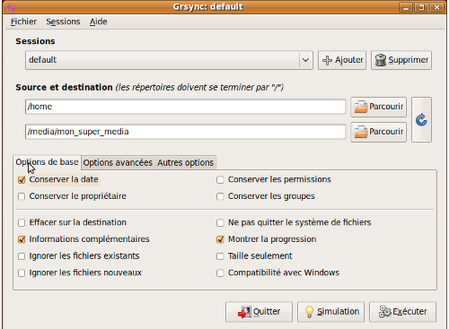
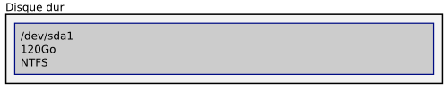
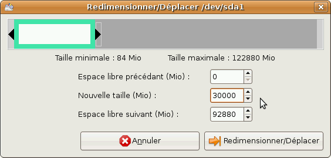
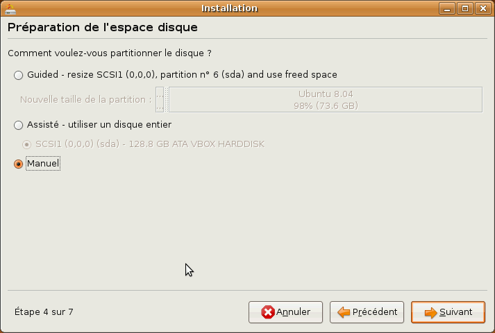
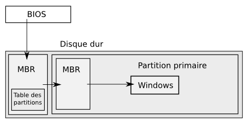
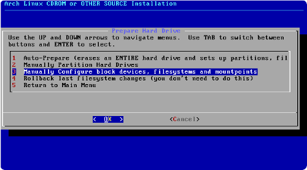

Vous venez de Windows, vous désirez installer Ubuntu en conservant tout de même votre premier operating system (ou système d'exploitation, que nous abrégerons dorénavant par OS) ?
Vous êtes un habitué de GNU/Linux, mais vous souhaitez faire vos armes avec une distribution autre que celle que vous utilisez actuellement, tout en conservant cette dernière ?
Alors, ce tutoriel est fait pour vous !
Dans ce tutoriel nous allons vous expliquer tout ce que vous aurez besoin de savoir : partitionnement, configuration du chargeur d'amorçage, etc.
Bien que la marche à suivre détaillée sera parfaitement accessible pour tout un chacun, nous mettrons l'accent sur l'utilisation de la ligne de commande.
Ce tutoriel s'adresse aussi bien à des personnes débutant dans l'univers de GNU/Linux qu'à des personnes ayant déjà acquis une base et des connaissances sur le fonctionnement général de ce dernier.
Dans cette optique, le cours présentera l'utilisation de logiciels avec interface graphique, simples et intuitifs, ainsi que des outils en ligne de commande, l'accent, nous le répétons, étant mis sur ces derniers.
De façon générale, des exemples pratiques accompagneront les détails théoriques, non seulement car notre volonté est que vous bénéficiez d'un système multiboot à l'issue de notre tutoriel, mais aussi, à plus forte raison, car la pratique vous aidera à comprendre les outils expliqués et à vous familiariser avec leur utilisation.
Les personnes ayant déjà un certain niveau de connaissances peuvent, si elles le désirent, passer directement à la partie suivante. Nous allons dès maintenant clarifier ce qu'est le multiboot, préciser ce qu'est un disque dur et comment il est perçu sous GNU/Linux, apporter la lumière sur ce que sont les partitions.
Attention toutefois, bien que nous ayons dit que des personnes débutant sous GNU/Linux pouvaient suivre ce tutoriel, il faut garder à l'esprit que ça ne sera qu'un accompagnement pour suivre au mieux le tutoriel officiel de M@teo21.
Bref, on va faire en sorte que ça ne se transforme pas en catastrophe.
Mais trêve de bavardages, allons y !
Le multiboot : présentation
Une question qui vous taraude l'esprit, sans aucun doute, est :
Mais qu'est-ce donc que le multiboot ?
Voici la définition qu'en donne la célèbre encyclopédie libre, Wikipedia :
Citation : Wikipedia
Le multiboot est un terme informatique qui désigne la possibilité d'installer sur un même ordinateur plusieurs systèmes d’exploitation et de choisir l'un d'eux lors du démarrage de l'ordinateur. Exemple : un multiboot Windows/Linux. Les logiciels permettant un multiboot sont appelés chargeurs d’amorçage (en anglais Boot loader).
Le multiboot sert aussi à choisir l'un ou l'autre noyau pour une même distribution.
Vous l'aurez compris, on va ici traiter du cas où on souhaite installer plusieurs distributions en cohabitation. Dans le cas particulier où on aurait seulement 2 distributions installées sur un même disque dur, on parlera de dualboot.
Un chargeur d'amorçage (ou bootloader) est un logiciel permettant de lancer un ou plusieurs systèmes d'exploitation (multi-boot), c'est-à-dire qu'il permet d'utiliser plusieurs systèmes, à des moments différents, sur la même machine.
C'est donc un petit programme, en général écrit sur les 496 premiers octets de votre disque dur, qui démarre vos différents systèmes d'exploitation, notamment leur noyau (aussi appelé kernel).
Rassurez-vous, si les notions de bootloader ou de kernel vous semblent floues, elles seront explicitées avec précision dans les sections correspondantes.
Avant toute chose, nous tenons à préciser que la lecture de cette partie est purement facultative, mais qu'elle vous aidera à saisir encore mieux ce que sont les partitions et certaines informations délivrées par les éditeurs de partitions, qu'ils soient en ligne de commande ou dotés d'une interface graphique.
Présentation sommaire
Si tout le monde connaît l'utilité d'un disque dur et a, au moins, une vague idée de ce à quoi ça ressemble, il est moins fréquent d'en connaître la structure et le fonctionnement.
Après une rapide description physique et mécanique de sa structure, nous nous attarderons quelque peu sur son fonctionnement interne.
Avant toute chose, question :
Quel est le rôle d'un disque dur ?
Le disque dur (en anglais, hard drive ou encore hard disk drive) est le composant physique qui se charge de retenir vos données de façon permanente. Il fonctionne, comme votre ordinateur par ailleurs, de manière binaire, vos données sont donc encodées et retenues à l'aide de 1 et 0 uniquement ! On dit alors que vos données sont stockées sous forme de bits ou sous forme binaire.
Le disque dur se distingue de la RAM (la mémoire vive) par un temps d'accès plus important, mais une capacité bien supérieure. Contrairement à la RAM, qui se vide à chaque redémarrage, le disque dur (parfois appelé mémoire de masse), est capable de retenir vos données, même lorsqu'il est hors tension.
On va maintenant s'attacher à expliquer rapidement la conception physique et mécanique d'un disque dur.
Structure générale d'un disque dur
J'imagine que tout le monde n'a pas envie d'ouvrir le capot pour voir à quoi ressemble un disque.
Voilà donc un exemple de disque dur, dont les composants ont été annotés :
L'endroit où sont stockées vos données (c'est surtout celui-là qui va nous intéresser) est ce qui ressemble, sur l'image, à un empilement de CD-ROMs.
Voilà un petit zoom sur la partie qui va occuper notre attention :
Ces "empilements de CD-ROMs" dont nous avons parlé sont en réalité un empilement de plateaux concentriques, fixés autour d'un axe inamovible, ayant chacun deux faces. Sur chaque face figure un certain nombre de pistes composées de secteurs. Les secteurs ont habituellement une taille de 512 octets.
On appelle cylindre l'ensemble des pistes situées à une distance égale de l'axe central (il y a donc autant de cylindres que de pistes différentes sur un même plateau).
Pour résumer, l'espace disque est constitué d'un certain nombre de secteurs !
Les autres composants ont, en général, un nom assez explicite.
Le connecteur d'alimentation permet par exemple d'alimenter votre disque dur en électricité. La tête de lecture/écriture permet de lire ou d'écrire des données sur l'espace disque (de façon exagérément simplifiée). L'interface relie votre disque dur à la carte-mère, par le biais d'un contrôleur de disque. Il existe plusieurs types de contrôleurs de disques, on distingue notamment :
Les disques IDE.
Les disques SCSI.
Les disques Serial ATA (ou encore SATA).
Les disques ATA.
Les diques PATA.
Les disques USB.
Principe de fonctionnement
Sans rentrer dans les détails, on va détailler rapidement le fonctionnement d'un disque dur.
Les plateaux rigides, dont nous avons parlé, sont en rotation, à vitesse constante, autour de l'axe fixe. Ces plateaux sont, en général, fabriqué en aluminium (métal non magnétique), en verre ou encore en céramique. Ils sont recouverts d'une fiche couche magnétique, sur laquelle sont stockées les données, sous forme binaire (succession de bits). L'encodage est réalisé au moyen de la tête de lecture/écriture. Suivant le niveau de tension appliqué, la tête modifie le champ magnétique local pour écrire un 1 ou un 0.
En ce qui concerne la lecture des données, le principe est identique, quoi qu'inversé ! La tête de lecture/écriture analyse le champ magnétique local et en déduit la valeur du bit en question.
Une analogie, qui vaut ce qu'elle vaut, pourrait être de comparer ce principe à celui d'un disque 33 tours.
Précautions d'usage externe
Prenez des gants, ne touchez pas vos appareils, qu'il s'agisse du disque dur ou d'autre chose, à mains nues !
Lisez la documentation de votre disque dur.
Très important : mettez vous à la masse avant toute manipulation !
Cela, afin que l'éventuel surplus d'électrons (résidu d'électricité statique, ce qui arrive fréquemment, par contact avec votre pull, par exemple) de votre corps retourne directement à la terre, et que vous ne soyez pas chargé, même très légèrement.
En effet, votre disque dur étant constitué de plateaux recouverts de fines couches magnétiques, étant donné le principe de la tête de lecture/écriture, vous imaginez les dégâts que vous pourriez faire si vous êtes légèrement chargés !
Nous expliquions cela à titre d'information, il y a fort à parier que vous n'ayez pas à manipuler votre disque dur physiquement.
Unités de capacité d'un disque dur
Parlons maintenant de la capacité de votre disque dur.
Nous vous avons parlé de secteurs, de cylindres, d'octets et de bits !
Vous imaginez bien que les êtres humains n'ont pas l'habitude de chiffrer les capacités à l'aide de telles unités.
Non, on a pour habitude d'énoncer les capacités en kiloByte (kB), MegaByte (MB), en GigaByte (GB), etc... Le choix du préfixe est effectué de façon à ce que la lecture soit la plus aisée possible pour les humains. Ainsi, nous parlerons en kB pour un fichier .mp3 mais en GB pour un disque dur.
Cependant, il nous apparaît utile d'éclairer un zone d'ombre qui subsiste.
Distinction entre capacité réelle et capacité fictive
Vous savez maintenant que vos données sont encodées de façon binaire, i.e. sous forme de bits sur votre disque dur. Une façon, bien que très peu confortable pour des humains, de chiffrer la capacité d'un disque est d'utiliser le nombre de bits maximum pouvant y être inscrits !
Ceux qui ont l'habitude de manipuler le langage binaire savent que les nombres codés suivant cette méthode s'expriment toujours en base 2. Les commerçants ont cette désagréable habitude de s'exprimer en base 10, par soucis de facilité diront certains... Il est quand même "étonnant" de constater que cette commodité va à la rencontre de leur intérêt.
Ainsi, pour un informaticien, un kilo-byte vaut 210 = 1024 bytes, alors que pour le commerçant, il vaudra 103 = 1000 bytes. Si on note Δε la différence entre la valeur réelle et la valeur fictive attribuée par le commerçant, on constate que ce Δε vaut 24 bytes ici !
Dans le cas d'un Giga-byte, l'informaticien comptera 230 = 1 073 741 824 bytes, alors que le commerçant comptera 109 = 1 000 000 000 bytes, ce qui nous fait un Δε = 73 741 824 bytes = 73.741 MB !
Autant les 24 bytes d'erreur précédents pouvaient être négligés, autant l'erreur, Δε, commence à se faire importante dans ce cas...
Vous constatez que l'erreur commise, augmente malheureusement au fur et à mesure, elle tend vers l'infini en fait.
Oui mais je ne vois pas d'arnaque, le commerçant indiquerait une taille inférieure à la taille réelle, donc on est gagnant au bout du compte, non ?
Vu comme ça, c'est vrai... Mais, il faut prendre le problème autrement.
Lorsque le commerçant vous indique un disque dur d'une capacité d'un Tera-byte (1TB = 1012 bytes), il fait effectivement un Tera-byte, selon le mode de comptage du commerçant. Mais nous venons de voir que la façon dont compte le commerçant introduit une erreur croissante avec la capacité !
Le commerçant sur-estime la taille réelle de votre disque dur et vous fait croire qu'il fait réellement un TB !
La taille réelle de votre disque dur est en fait : \frac{10^{12}}{2^{30}} = 931 322 574 615\mbox{ bytes} = 931,323 \mbox{ GB} et non 1000 GB comme vous vous y attendiez en achetant votre disque.
Ce Δε, qui valait seulement 24 bytes dans le cas de l'erreur commise vis-à-vis d'un kB, vaut ici approximativement 70 GB...La taille réelle du disque est donc inférieure, de 70 GB, à ce qui est affiché sur la boîte...
Ce paragraphe était donné à titre d'information, non seulement pour que compreniez comment compte votre ordinateur, mais aussi pour que vous voyez comment on peut faire du profit en jouant sur les chiffres.
Mais que faire alors, si on désire parler en termes de capacité réelle ?
On introduit la notion de préfixe binaire, en contraste avec la notion de système international (SI).
Cela rejoint ce que nous exposions plus haut, le système international compte en base 10, le système binaire en base 2.
Vous verrez certainement, sur votre distribution Linux, des tailles de fichiers s'exprimer en MiB. Ça veut tout simplement exprimer une taille de 220 octets = 1 048 576 octets ~ 1.048 MB
Voila, cette dernière partie était introduite à titre informatif, pour que vous ne soyez pas désarçonnés si vous voyez un jour ce "i" se glisser entre le préfixe et l'unité !
Avant de passer à l'explication du partitionnement, voici un petit tableau offrant les conversions :
Maintenant que vous en savez un peu plus sur le fonctionnement d'un disque dur et sur sa structure, nous allons pouvoir passer au concept qui nous intéresse, à savoir : le partitionnement !
Avant toute chose, il est nécessaire de fixer une fois pour toutes ce que nous entendons par partitions.
On définit une partition comme étant une partie de disque dur destinée à accueillir un système de fichiers. Il s'agit donc de fractionner votre disque dur matériel en plusieurs morceaux virtuels, distincts les uns des autres.
Les différents types de partitions
Il existe différents types de partitions :
Les partitions primaires, qui accueilleront un système de fichiers.
Les partitions étendues, considérées comme des partitions primaires un peu particulières, accueilleront en leur sein des partitions ou lecteurs logiques.
Les partitions ou lecteurs logiques, partitions incluses dans une partition étendue.
Sur un même disque dur, on est limité à 4 partitions primaires maximum. Il est donc de tradition de consacrer 1 des 4 partitions primaires à la constitution de la partition étendue, qui contiendra suffisamment de lecteurs ou partitions logiques pour réaliser notre objectif.
Ainsi, on disposera de 3 partitions primaires et d'une partition étendue englobant plusieurs partitions logiques !
Les systèmes de fichiers
Un système de fichiers (vous entendrez couramment parler de filesystem) est une structure de données permettant de stocker et d'organiser des informations. Il est alors possible de partager les données ainsi mémorisées entre plusieurs programmes informatiques. Il permet de localiser ces données à l'aide d'un chemin d'accès.
À l'instar des partitions, vous imaginez bien qu'il n'existe pas un seul type de fichiers de standard !
Il convient, premièrement, de faire la distinction entre les systèmes de fichiers journalisés et les systèmes de fichiers non-journalisés.
Ensuite, certains sont inhérents à certains types d'OS !
Les systèmes de fichiers journalisés
Un tel système de fichiers tient compte d'éventuelles corruptions pouvant avoir lieu.
Imaginions qu'avant le terme de l'écriture de vos données, sous forme binaire, sur votre disque dur, se produise une coupure de courant ! Le fichier en cours d'écriture devient corrompu et incomplet.
Le principe d'un système de fichiers journalisé est de prévenir une telle corruption. L'astuce réside dans le fait qu'à la sauvegarde d'un fichier, le système de fichiers écrit les données dans une partie du disque dur autre que celle initialement destinée à les accueillir (une sorte de brouillon, si vous voulez).
Ensuite, sitôt que cela est accompli, les données sont écrites, petit à petit, sur votre disque dur à l'endroit prévu. L'avancement de la transaction est reporté dans un journal. Le système de fichiers passe alors en revue chacune des entrées du journal et termine le travail.
Après quoi, lorsque la tâche est accomplie, il la raie de la liste.
Mouais, c'est bien beau tout ça, mais en quoi cela prévient-il la perte de données ?
Prenons un exemple, cela vaut mieux qu'un long discours ! Supposons que vous enregistriez votre dernière création graphique. Ce qui se passe, c'est que votre système de fichiers écrit un "brouillon" du fichier à enregistrer dans une partie du disque dédiée à cela et écrit le changement à accomplir dans le journal.
Votre ordinateur commence ensuite à retranscrire les données depuis le "brouillon" vers l'emplacement légitime de ces données. Pour une raison x, la transcription est interrompue.
Lors de la reprise de la transaction, les données finales, bien qu'incomplètes, sont toujours présentes sous forme de "brouillon" dans l'espace disque dédié à cela.
L'ordinateur recommence la transaction en écrasant les données corrompues.
Pourquoi se sert-on toujours de systèmes de fichiers non journalisés, au vu des avantages proposés par les systèmes de fichiers journalisés ?
Il faut savoir que tous ces avantages ont leur prix. Utiliser un journal, vous vous en doutez, requiert une capacité plus importante de stockage que si vous n'en utilisiez pas.
Alors, vous allez me dire que, quand on voit la capacité de certains disques durs, la capacité de stockage requise par un journal est dérisoire.
Vous avez raison, dans les disques durs modernes, cette capacité est dérisoire... Mais qu'en est-il des médias de plus faibles capacité, comme une carte mémoire ou une disquette ?
Dans ces cas là, on utilisera un système de fichiers non journalisé, au risque de gâcher une trop grande proportion de la capacité disponible. Ce type de filesystem fait l'objet du sous-point suivant.
Après cette introduction sur les systèmes de fichiers journalisés, voyons maintenant les différents types qu'il existe :
ext3 (le choix historique pour une distribution GNU/Linux).
ext4 (La dernière mouture d'ext, considéré comme stable depuis la version 2.6.28 du noyau Linux).
NTFS (le système de fichiers à utiliser pour les données du système, sous Windows).
ReiserFS (un système de fichiers très prometteur, hélas, le support ne semble plus assuré...).
Sachez qu'il en existe encore d'autres, beaucoup d'autres même. Reportez-vous à la documentation officielle de votre distribution pour plus de détails.
Les systèmes de fichiers non journalisés
Ces systèmes de fichiers, contrairement à ceux exposés plus haut, n'utilisent pas de journal. Pour cause, nous l'avons dit, ils sont utilisés sur des médias de faible capacité en général.
On distingue les types suivants de systèmes de fichiers non journalisés :
ext2 (employé dans le cas d'une partition /boot séparée, car aucun besoin de journalisation dans ce cadre précis).
FAT qui se décompose en :
FAT12 (développé par Microsoft, encore utilisé pour les disquettes...).
FAT16 (utilisé par MS-DOS et Windows 95. Certaines clés USB utilisent ce système de fichiers).
FAT32 (système de fichiers sur lequel Windows ou un système GNU/Linux peuvent tous deux écrire, utile pour une partition Documents commune aux 2 OS).
VFAT (utilisé pour les noms de fichiers longs, au contraire des autres systèmes FAT dont la convention était un nom de fichiers de 8 caractères et une extension de 3 caractères. Permet également de s'affranchir de format ASCII majuscules imposé originellement par les FAT).
FATX (système de fichiers pour Xbox).
UFS (Utilisé par *BSD et solaris).
Le premier chapitre de la théorie est terminé.
Nous allons pouvoir passer à la gestion des fichiers sous UNIX.
Dans ce chapitre, nous allons voir l'organisation des fichiers dans les systèmes UNIX, qui est donc aussi en vigueur sous Linux (c'est un système dit UNIX-like, c'est à dire qu'il reprend de nombreux principes d'UNIX).
Nous allons aussi parler des points de montage, et nous allons apprendre à repérer les différentes partitions de nos disques durs.
Ce chapitre est exclusivement théorique, mais il introduit des notions dont vous aurez impérativement besoin pour la suite. À ne manquer sous aucun prétexte !
Si vous venez du monde de Windows, vous avez sûrement l'habitude d'avoir un disque C:, un disque D:, etc. Chacun de ces disques correspond à une partition, à laquelle Windows a attribué une lettre.
Chacun de ces disques a un dossier racine, par exemple C:\, contenant des sous-dossiers, comme C:\WINDOWS ou D:\Programmes.
Sous UNIX, c'est différent : on a un seul dossier racine, /, qui contient tous les fichiers. La différence, c'est que ce dossier ne correspond pas à une seule et unique partition. Nous allons voir comment comment une telle chose est possible juste après.
Ce dossier racine, ou root directory, contient plusieurs sous-dossiers, ayant chacun une fonction bien particulière.
/etc
Ce dossier contient les fichiers de configuration du système. Attention : ce sont les paramètres du système uniquement qui sont stockés ici, les paramètres des différents utilisateurs sont stockés dans leurs dossiers personnels respectifs !
/dev
Ce dossier est un peu particulier : il contient tous les périphériques de votre ordinateur. Et oui, sous UNIX tout est fichier ! Cela veut dire que vos disques durs, votre souris, vos périphériques USB, ... sont vus comme des fichiers, pour permettre une communication facile avec le périphérique.
/home
Ce dossier contient les données des différents utilisateurs du système. Par exemple, /home/foo contient les données de l'utilisateur foo, ainsi que les préférences des logiciels qu'il utilise. On parle alors du dossier personnel d'un utilisateur.
/usr
Ce dossier contient le gros du système : toutes les applications sont là-dedans. Il est divisé en plusieurs sous-dossiers :
/usr/bin : ce dossier contient les exécutables des fichiers, c'est-à-dire l'application elle-même.
/usr/share : ce dossier contient les données des applications. Par exemple, tous les graphismes d'un jeu seront dans /usr/share/<nom du jeu>
/usr/lib : ce dossier contient les bibliothèques de fonctions, c'est-à-dire des applications qui fournissent certaines fonctions communes à plusieurs programmes.
/usr/include : ce dossier contient les en-têtes des librairies. Ces fichiers ne sont utiles que quand on programme.
Cette organisation peut sembler étrange pour un habitué de Windows car tous les exécutables sont ensembles, etc. Mais en fait, ça simplifie grandement la vie lorsqu'on utilise la console : il suffit que le shell recherche à un seul endroit (enfin non, il y en a quelques autres que nous verrons plus loin) pour trouver l'exécutable demandé.
/bin
Ce dossier est un peu comme /usr/bin, sauf qu'il ne contient pas de grosses applications, il contient seulement les programmes les plus souvent utilisés : le shell, les commandes principales (ls, ps, pwd, ...) et quelques autres trucs.
/sbin et /usr/sbin
Ces deux dossiers contiennent les exécutables des applications qui permettent de modifier la configuration du système : par exemple ifconfig, qui permet de configurer la carte réseau, ou fsck qui permet de vérifier et de réparer une partition.
/boot
Ce dossier contient le noyau Linux, ainsi que le fichier de configuration du chargeur d'amorçage. Nous verrons cela plus en détail dans la suite de ce tuto.
/lib
Ce dossier contient, comme /usr/lib, des bibliothèques de fonctions, sauf que celles-ci sont plus bas niveau, c'est-à-dire qu'elles contiennent des fonctions plus "basiques" et utilisées par plus de programmes.
Ce dossier contient également les modules du noyau Linux, c'est-à-dire les "pilotes de périphériques", pour parler en termes Windowsiens.
/var
Ce dossier contient les fichiers de données créés par les services (par exemple les logs systèmes, ou les données d'une BDD MySQL). Il contient plusieurs sous-dossiers :
/var/log : ce dossier contient les logs du système et des applications, c'est-à-dire des fichiers dans lesquels les applications enregistrent leur activité, pour permettre de faire des statistiques ou de détecter des problèmes.
/var/lib : ce dossier contient les données des programmes. Par exemple, c'est là que sont stockées les données de MySQL. C'est aussi là que sont stockés les listes de paquets utilisées par votre gestionnaire de paquets.
/var/www : pour un serveur web, ce dossier contient souvent les données du site web hébergé.
Voici un petit schéma qui illustre la hiérarchie des fichiers sous UNIX.
La hiérarchie des répertoires sous UNIX
Les fichiers cachés
Les fichiers cachés sont des fichiers qui, par défaut, n'apparaissent pas dans votre explorateur de fichier. Dans la plupart des cas, il suffit d'utiliser le raccourci CTRL+H pour les afficher.
Ces fichiers sont simplement identifiés par le fait qu'ils commencent par un point, par exemple .bashrc. En général les logiciels stockent leur configuration dans des fichiers cachés, pour ne pas vous encombrer. Par exemple, allez dans votre dossier personnel et affichez les fichiers cachés. Vous devriez en voir beaucoup : chaque application a un fichier de configuration, ou même un dossier entier caché qui contient les différents fichiers que le programme utilise.
Mais alors, si sous UNIX on a un seul dossier racine, comment on fait quand on a plusieurs partitions ?
Et bien c'est là qu'apparaissent les points de montage. Vous vous demandez certainement ce que diable est un point de montage.
En fait, dans le système UNIX, on peut faire correspondre une partition à un dossier, n'importe lequel, dans le système de fichier. Quand une partition est associée à un dossier, on dit qu'elle est montée sur ce dossier. Ce dossier contient ensuite tous les fichiers de cette partition. Remarque : une partition peut très bien ne pas être montée.
Les points de montage prennent tout leur sens quand on les associe avec ce que nous venons de voir : par exemple, si on veut séparer les données utilisateurs du reste du système, il suffit de demander à Linux de monter une partition sur le dossier racine, /, et une autre sur le dossier des données utilisateur, /home. Et après, les fichiers qui se trouveront dans /home seront automatiquement mis dans une partition séparée !
Il peut être intéressant d'avoir une partition /home séparée pour de multiples raisons :
Cela permet de pouvoir formater la partition / lors d'une réinstallation sans pour autant perdre toutes ses données.
Cela permet de partager les données entre plusieurs distributions qui cohabitent sur le même ordinateur.
De même, sur certains serveurs il peut être utile de monter une autre partition sur /var, qui contient toutes les données d'un site web ou d'une base de données, pour éviter certaines pertes de données ou pour se protéger de certaines intrusions.
Le système de fichiers avec plusieurs partitions montées
Repérer ses partitions sous Linux
Si vous êtes déjà sous Linux, vous pouvez savoir quelles partitions sont montées. Pour cela, il suffit de taper la commande mount dans un terminal. Exemple :
[foo@mon-super-pc ~]$ mount
/dev/sda5 on / type ext3 (rw,noatime)
none on /dev type ramfs (rw,relatime)
none on /proc type proc (rw,relatime)
none on /sys type sysfs (rw,relatime)
none on /dev/pts type devpts (rw)
none on /dev/shm type tmpfs (rw)
/dev/sda6 on /home type ext3 (rw,noatime)
Ici, on peut voir que la partition /dev/sda5 est montée sur le dossier racine, /, et que la partition /dev/sda6 est montée sur /home. Les autres sont en faite des système de fichiers virtuels, nécessaires au bon fonctionnement du système.
Mais, ça correspond à quoi, /dev/sda5 ou /dev/sda6 ?
Et bien, c'est tout simplement le nom d'un fichier ! Et oui, sous UNIX, même les partitions sont des fichiers, présents dans /dev (comme tous les périphériques). Cependant, ce ne sont pas des fichiers comme les autres : les noms de fichiers des partitions suivent tous une convention bien particulière. Ils sont tous de la forme suivante : /dev/sdxx, où le premier x correspond à une lettre permettant d'identifier le disque dur, et le second x est un chiffre permettant d'identifier la partition.
Si on parle, par exemple, de /dev/sda, alors on parle du premier disque dur de l'ordinateur. Si on parle de /dev/sdb2, on parle de la deuxième partition primaire du second disque dur.
Pour les numéros de partitions, les chiffres de 1 à 4 sont réservés pour les partitions primaires, et les chiffres de 5 à plus sont utilisés pour les lecteurs logiques.
Par exemple, si un disque dur contient une partition primaire et une partition étendue contenant un lecteur logique, alors /dev/sda1 sera la partition primaire, /dev/sda2 sera la partition étendue (elle ne peut pas être montée, ce n'est en fait qu'un simple conteneur pour les lecteurs logiques) et /dev/sda5 sera le premier lecteur logique.
Les identifiants uniques (UUID)
Il peut y avoir des cas où cette notation ne permet pas de retrouver une partition. Par exemple, si vous avez une clef USB, elle peut être reconnue comme /dev/sdb sur un ordinateur, mais comme /dev/sde sur un autre, car ce dernier aura d'autres disques durs déjà connectés.
En général, cela ne pose pas de problème quand c'est un humain qui doit identifier une partition : il suffit de regarder dans /dev pour trouver son périphérique, ou au pire d'utiliser la commande fdisk -l, qui permet d'afficher toutes les partitions de tous les disques (disques durs internes ou externes, clefs USB, ...) avec les informations nécessaires pour les repérer.
Cependant, il peut y avoir certains cas où vous ne pouvez pas intervenir pour dire à votre ordinateur quelle partition il doit monter et où, comme par exemple lors du démarrage de l'ordinateur, où le noyau doit être capable de retrouver la partition à monter sur le dossier racine quoi qu'il en soit.
C'est pour cela qu'on a inventé les Identifiants Uniques Universels, ou UUID. Le principe est simple : chaque partition est associée à une chaîne de caractères qui est absolument unique et permet à coup sur de la retrouver. Ces identifiants uniques se présentent généralement sous la forme suivante : 5640925a-73bb-4b71-870d-ff32a7819398.
Comment ça marche en pratique ? C'est simple : lorsque votre ordinateur détecte un disque dur, il crée le fichier /dev/sdx correspondant, ainsi que les fichiers /dev/sdxx correspondant aux partitions de ce disque. Mais il crée aussi des fichiers de la forme /dev/disk/by-uuid/<identifiant unique de la partition>, qui sont en fait des liens symboliques (ou "raccourcis") vers la partition correspondante.
Le cas des supports amovibles
Dans le cas d'un support amovible, tel une clef USB ou un disque dur externe, le noyau Linux crée automatiquement un nouveau fichier /dev/sdx associé au périphérique, et un ou des /dev/sdxx correspondant aux partitions du périphérique.
Dans certains systèmes, vous aurez besoin de monter ces partitions à la main pour pouvoir en lire le contenu, mais la plupart des systèmes modernes incorporent un outil nommé HAL qui monte automatiquement vos supports amovibles. Cela évite aussi de devoir demander les droits super utilisateur à l'utilisateur qui veut utiliser son support de stockage.
Voila, avec ça vous êtes prêts pour attaquer la suite de ce tuto !
Les opérations que vous allez être amenés à effectuer, si vous désirez bénéficier du multiboot ne sont pas sans risques !
En effet, une erreur d'inattention pourrait causer le formatage d'une mauvaise partition, un mauvais système de fichiers créé, etc...
Autant d'erreurs qui convergent vers un même point : La perte de données.
On va voir quelle précaution prendre, non pas pour s'affranchir des erreurs d'inattention (c'est malheureusement impossible ça...) mais pour avoir une solution de rechange en cas de perte de données.
Cette partie présente les différents types de sauvegarde et de l'utilisation d'un logiciel de sauvegarde avec interface graphique.
Il existe bien évidemment des outils en CLI, leur utilisation sera présentée dans une partie ultérieure.
Avant de vous présenter un logiciel de sauvegarde, il est bon de vous parler des différents types de sauvegarde.
En effet, la sauvegarde ne se résume pas entièrement à une copie pure et dure de l'intégralité de vos fichiers !
Certes, il existe bel et bien une sauvegarde qui tient compte de tous vos fichiers, mais ce n'est pas la seule, il existe également d'autres types.
La sauvegarde complète
Voilà le type de sauvegarde dit basique.
C'est une sauvegarde qui ne tient compte d'aucun élément sauvegardé antérieurement.
Pour que vous visualisiez bien le processus, il faut imaginer que ce type de sauvegarde prend un snapshot de votre système à un moment donné et que le logiciel est capable, grâce à ce snapshot, de ramener votre système tel qu'il était exactement au moment de la sauvegarde.
Il est évident que ce type de sauvegarde occupe une place importante. Vous verrez que c'est celle qui est la plus exigeante en termes de capacité.
La sauvegarde incrémentale
Ce type de sauvegarde a la particularité de comparer l'état de votre système avec la dernière sauvegarde, quelle qu'elle soit, en date et de sauvegarder uniquement les changements apparus depuis.
Vous l'avez compris, ce type de sauvegarde est utile car il permet de se focaliser uniquement sur les changements et sur les fichiers modifiés depuis la dernière sauvegarde.
Il est évident que la taille occupée par une telle sauvegarde est beaucoup plus petite que celle occupée par une sauvegarde complète.
En contrepartie, vous devez disposez d'une sauvegarde complète du système pour pouvoir utiliser la sauvegarde incrémentale.
La sauvegarde différentielle
Fort semblable à la sauvegarde incrémentale, ce type de sauvegarde ne se préoccupe que de la dernière sauvegarde complète du système, non pas d'éventuelles autres sauvegardes effectuées entre-temps.
Évidemment, ce type de sauvegarde est en général plus coûteux en espace disque qu'une sauvegarde incrémentale.
Je ne vois pas pourquoi on utiliserait la sauvegarde différentielle, puisqu'elle est plus coûteuse en espace disque que la sauvegarde incrémentale. Elle doit bien avoir un avantage, non ?
Oui, bien sûr qu'il y a un avantage.
C'est-à-dire que si vous êtes un jour amenés à devoir restaurer vos données, c'est très simple avec une sauvegarde complète.
Mais qu'en est-il avec les sauvegardes différentielles et incrémentales ?
Dans le cas d'une différentielle, vous devrez uniquement disposer de cette sauvegarde ainsi que la dernière sauvegarde complète du système.
Dans le cas de sauvegardes incrémentales, vous devrez non seulement disposer de toutes les sauvegardes incrémentales ainsi que de la dernière sauvegarde complète, mais en plus, vous devrez les restaurer dans l'ordre de création !
Sur quel support sauvegarder ?
Il n'existe malheureusement pas de réponse standard à cette question.
De même que la taille que vous allouerez plus tard à vos partitions, le type de support à utiliser pour la sauvegarde dépend essentiellement de la taille de vos données et de l'utilisation que vous comptez en faire.
On a l'habitude de dire que deux précautions valent mieux qu'une, et que la meilleure sauvegarde est celle qu'on ne peut physiquement toucher !
Dans cette optique, une bonne stratégie est de sauvegarder ses données à différents endroits.
On sauvegardera par exemple son système sur un serveur en utilisant le protocole SSH et sur un disque dur externe.
Mais on préfèrera peut-être graver ses photos de vacances sur un CD ou un DVD ou encore utiliser une clé USB, pour les montrer aux amis.
On pourrait choisir de sauvegarder son travail de fin d'études sur une clé USB, pour pouvoir l'emmener facilement dans sa poche.
Bref, vous le voyez, les possibilités sont nombreuses et dépendent exclusivement de la taille des données et de l'utilisation que vous escomptez en faire.
Les répertoires à sauvegarder
Vous vous en doutez certainement, tous les répertoires présents sur votre ordinateur n'ont pas la même valeur.
Non seulement, il est inutile de sauvegarder l'intégralité de son système, mais en plus, c'est même carrément déconseillé !
Quelle serait l'utilité de conserver un répertoire qui se vide à chaque (re)boot ? À quoi cela servirait-il de sauvegarder le répertoire contenant vos supports amovibles ?
À rien me direz vous, et vous avez raison.
Par contre, d'autres répertoires doivent absolument être sauvegardés !
L'objectif des paragraphes suivants est de vous informer sur les répertoires à inclure/exclure de vos sauvegardes, en donnant systématiquement la ou les raisons.
Les répertoires à inclure
Le répertoire /home
En effet, ce répertoire contient vos données utilisateurs, tous vos fichiers par extension.
Que ce soit un de vos codes source, si vous programmez, vos modélisations 3D, vos images ou encore votre musique, c'est là que ça se trouve et il vaut mieux sauvegarder tout ça !
Le répertoire /etc
Ce répertoire contient tous les fichiers de configuration de votre système. C'est sans aucun doute un des répertoires les plus importants de votre système.
Autant vous dire qu'il faut impérativement le sauvegarder celui-là !
Le répertoire /usr
Comme nous vous l'avons dit, ce répertoire contient toutes vos applications. On peut dire qu'il n'est pas totalement nécessaire de le sauvegarder, dans une certaine mesure, c'est vrai.
En effet, il reste toujours la possibilité de réinstaller de nouvelles applications, similaires aux anciennes. Néanmoins, si vous voulez un système restauré tel qu'il était exactement, sauvegardez ce répertoire.
Le répertoire /var
Ce répertoire contient notamment les logs, les journaux, de ce qui s'est passé sur votre système. Dans le cas d'une attaque par un pirate, on dit qu'il est utile de consulter le répertoire /var/log pour voir ce qui s'est passé.
Parmi les sous-répertoires de /var, on distingue aussi /var/mail, il peut-être utile de le conserver en cas de présence d'un serveur de messagerie.
Le répertoire /boot
Ce répertoire contient votre noyau Linux et le fichier de configuration (au passage, remarquez qu'il ne se trouve pas dans /etc) de votre chargeur d'amorçage. Ces notions seront détaillées par la suite, mais gardez à l'esprit que sans ça, votre distribution ne risque pas de démarrer.
Les répertoires à exclure
Le répertoire /media
Ce répertoire contient tous les supports amovibles connectés à votre ordinateur, comme votre disque dur externe, votre DVD ou votre clé USB.
Inutile de détailler pourquoi il faut exclure le répertoire les contenant.
Le répertoire /tmp
Ce répertoire porte bien son nom. Tmp est une abréviation de l'anglais (comme bien souvent pour les commandes ou les répertoires sous Linux d'ailleurs) temporary.
C'est-à-dire que tout ce qui est temporaire s'y trouve. Son contenu est vidé à chaque démarrage de votre système. Il change donc à chaque session. Pour ces raisons, il est inutile d'en conserver le contenu.
Exclure selon la taille ou l'extension ?
Pour l'instant, nous avons surtout choisi d'inclure ou d'exclure des fichiers d'après leur utilité ou leur inutilité.
Prenons un exemple concret. Je vous ai dit qu'il était nécessaire de sauvegarder son /home, car les données utilisateur s'y trouvent. Mais dans ce /home, imaginons que vous avez copié le contenu des albums musicaux de vos artistes favoris.
Il ne servirait à rien de les sauvegarder, puisque vous disposez de ces fichiers musicaux sur vos CD d'origine, ce serait de l'espace disque gâché.
Sauvegarder une image .iso serait tout aussi inutile, puisqu'il vous suffit de la télécharger.
De même, des fichiers extrêmement volumineux prendraient de la place pour rien...
C'est donc pour ça qu'en général, il est possible d'exclure des fichiers indépendamment de leur répertoire (qui sera quasi toujours /home), uniquement en fonction de leur taille ou de leur type.
Quel logiciel graphique choisir ?
Il existe un nombre relativement grand de logiciels de sauvegarde. Parmi les principaux, on distingue :
Areca_Backup
Back in time
BackupPC
FullSync
Grsync
Keep
SBackup
Autre...
Nous avons arbitrairement choisi de vous présenter Grsync, un logiciel pourvu d'une interface graphique et s'appuyant directement sur rsync, un outil en CLI.
Nous allons maintenant détailler l'utilisation de Grsync.
Étant donné que vous connaissez le rôle des répertoires importants, ainsi qu'il a été expliqué dans le deuxième chapitre et brièvement rappelé dans celui-ci, tout va bien se passer.
Installation de Grsync
L'installation est on ne peut plus classique. Ouvrez un terminal et lancez votre gestionnaire de paquet avec le paquet grsync pour cible.
Sous Fedora, on fera # yum install grsync
Sous Ubuntu, on lancera # apt-get install grsync
Sous Gnome et sous ubuntu Jaunty Jackalope 9.04, le logiciel se trouvera dans Applications –> Outils système –> Grsync
Présentation rapide et utilisation
Lancez pour la première fois le programme, vous devriez tomber nez à nez avec une fenêtre telle que celle-ci :
Comme vous le remarquez, vous avez deux champs qui sont initialement vides et qui correspondent à source et destination. Inutile de préciser qu'il faut les remplir avec les chemins absolus appropriés.
Si on voulait par exemple sauvegarder son /home sur son disque dur, on devrait écrire ceci :

Vous constatez également qu'il y a quelques onglets à cocher.
Si vous laissez votre curseur un instant dessus, vous constaterez qu'un message apparaît à l'écran. Le message vous informe du paramètre que Grsync va passer à l'outil en ligne de commande sur lequel il s'appuie : rsync.
Bon, cela étant, nous vous conseillons de cocher l'option date pour vous y retrouvez dans vos sauvegardes.
Pensez aussi à cocher les options conserver le propriétaire, les droits et les groupes, c'est surtout utile si vous avez plusieurs utilisateurs sur votre système.
Vous pouvez aussi cocher informations complémentaires et montrer la progression, si vous désirez voir où la sauvegarde en est.
Vous remarquez aussi que ces options étaient basiques et qu'il existe un onglet d'options avancées.
Rendez-vous dessus, vous aurez cette interface devant vous !
Choisissez comprimer les données pour bénéficier de la compression gzip, effectuer la somme de contrôle afin de vérifier l'intégrité de vos sauvegardes et encore conserver les liens symboliques, pour que les liens symboliques que vous avez pris soin de créer soient conservés en tant que tels.
Vous remarquez qu'une fenêtre vous laisse la liberté de passer des options supplémentaires à rsync, si vous les connaissez et si besoin en est. Vous n'aurez pas besoin de vous préoccuper des autres options.
Il existe encore un troisième onglet intitulé autres options, qui ressemble à cela :
Nous vous le précisions uniquement à titre informatif. Comme vous le voyez, vous avez la possibilité d'exécuter une commande avant ou après l'exécution de rsync.
Quelle commande pourrions nous bien utiliser ?
Nous avons mentionné l'existence de serveur distant par exemple. Il peut-être bon de lancer la copie de la sauvegarde nouvellement créé depuis le média jusqu'au serveur distant.
Reportez-vous à la section détaillant la sauvegarde en ligne de commande pour plus de détails à ce sujet !
Dernière précision
Nous vous recommandons d'effectuer une simulation avant de sauvegarder.
Les plus attentifs d'entre-vous auront remarqué la présence d'un onglet intitulé sessions, sur le haut.
Cet onglet sert à définir plusieurs sessions, c'est-à-dire que vous pouvez définir plusieurs configurations de sauvegarde en parallèle.
Si vous désirez changer de configuration pour telle ou telle raison, il vous suffit de choisir votre nouvelle configuration, que vous aurez paramétré au préalable, évidemment.
Bien, tout est dit à propos de Grsync, passons maintenant à la présentation d'un deuxième outil !
Bien entendu, le fonctionnement est similaire, mais au moins, vous pourrez choisir celui que vous préférez.
Comme nous l'avons expliqué, il existe encore d'autres logiciels de sauvegarde avec interface graphique, mais leur fonctionnement est semblable, de sorte que nous aurions l'impression de radoter en vous les présentant.
L'installation de SBackup est on ne peut plus classique, lancer votre gestionnaire de paquets avec le paquet sbackup comme cible (on ne vous fera pas l'injure de remettre la commande).
Toujours sous Gnome, le logiciel se trouve dans Système > Administration.
Vous y trouverez deux interfaces différentes : Simple Backup Config et Simple Backup Restore. La première des deux sert à définir sa configuration de sauvegarde, la deuxième à récupérer ses données.
Simple Backup Config
Ce programme s'exécutant avec les privilèges root, vous serez amenés à rentrer votre mot de passe.
Vous devriez ensuite atterrir sur une fenêtre telle que celle ci :
Vous pouvez donc utiliser les paramètres par défaut, définir une configuration personnalisée ou encore sauvegarder manuellement.
On va détailler les paramètres pour une configuration personnalisée.
Onglet inclure
Cet onglet porte bien son nom, il permet d'inclure les répertoires souhaités à la sauvegarde.
Les répertoires à inclure, ainsi que les raisons pour chacun d'eux, ont été exposées plus haut, nous n'allons pas les ré-expliquer ici.
Voici ce à quoi vous devriez arrivé en vous rendant sur l'onglet inclure :
Ne vous fiez pas au noms des répertoires choisis sur cette image.
Onglet exclure
Cet onglet là aussi porte bien son nom.
En effet, il permet de préciser quels répertoires exclure mais aussi quel type de fichier, que ce selon leur taille ou selon leur extension.
Ça rejoint ce dont nous vous parlions dans la section précédente.
Bref, voici à quoi ressemble cet onglet :
À part la partie expression régulière qui s'adresse aux utilisateurs un peu plus expérimentés et que nous vous conseillons de laisser telle quelle, vous voyez que le reste des options est intuitif.
Onglet destination
Une fois de plus, tout est dans le titre, cet onglet permet de spécifier la destination de votre sauvegarde !
On peut choisir un support interne (/var/backup par défaut) mais je vous déconseille de choisir cela néanmoins.
Vous pouvez préciser le point de montage de votre disque dur externe ou de votre clé USB (/media/disk par exemple).
Vous pouvez aussi choisir d'utiliser un serveur distant (essayer d'utiliser le protocole SSH).
Voila à quoi ressemble cet onglet :
Au passage, vous remarquez la syntaxe à adopter pour l'utilisation d'un serveur distant via le protocole SSH.
Onglet heure
Cet onglet est prévu pour l'automatisation des sauvegardes.
Il est bien entendu évident que votre ordinateur doit être allumé au moment où la sauvegarde se réalisera.
Enfin, choisissez le délai après lequel Simple Backup fera une sauvegarde complète.
Une précision s'impose: par défaut, Simple Backup ne sauvegarde que les fichiers modifiés depuis votre dernière sauvegarde. Les autres sont simplement ignorés. En revanche, il réalisera une sauvegarde complète - et donc aussi des fichiers non-modifiés - après le délai spécifié ici.
Pour finir, voila à quoi ressemble cet onglet :
Onglet nettoyage
Vos sauvegardes risquent vite d'occuper tout l'espace libre et donc de saturer la capacité de votre média !
Pour remédier à cela, il existe l'onglet nettoyage, qui, comme son nom l'indique, nettoiera vos anciennes sauvegardes pour faire de la place.
Vous pouvez et devez préciser au logiciel qu'il doit supprimer les sauvegardes trop vieilles ou incomplètes.
Suivant votre fréquence de sauvegarde, choisissez un nombre x qui définit la durée de vie de vos sauvegardes.
Pensez à prendre un nombre x supérieur à votre fréquence de sauvegarde complète (si les sauvegardes sont purgées tous les 10 jours alors que des sauvegardes complètes ne sont effectuées qu'une fois par mois, il est possible que vous tombiez dans un espace temps où vous ne disposez d'aucune sauvegarde.
Si vous avez besoin de sauvegardes sur du long terme (en entreprise par exemple), choisissez l'algorithme de suppression logarithmique.
Une fois vos paramètres choisis, n'oubliez pas de cliquer sur enregistrer pour que votre configuration soit mémorisée.
Pour finir à propos de cet onglet, voila à quoi il ressemble :
Simple Backup Restore
Voila, maintenant que vous savez comment sauvegarder vos données, vous aimeriez également savoir comment les récupérer ?
C'est vrai qu'il faut avouer que sauvegarder pour dire de sauvegarder, ça n'a pas grande utilité.
Bon, le logiciel qui se charge de cela est Simple Backup Restore, dont nous vous avons déjà parlé. Il se trouve dans Système > Administration également.
Lorsque vous le lancez, vous devriez tombez là-dessus :
Il n'y a pas grand chose à dire au sujet de cette fonctionnalité...
Comme vous le constatez, les sections sont claires (comme toujours avec SBackup) et parlent d'elles mêmes.
Vous devez donc préciser où votre sauvegarde a été effectuée.
Ensuite, le menu déroulant listera les différentes sauvegardes disponibles pour restauration.
Vous le voyez, le nom des sauvegardes est au format suivant : date_chiffres.distro-user.type_de_sauvegarde.
En dessous, vous pouvez choisir de restaurez certains dossiers uniquement, pas la totalité de la sauvegarde.
Tout est dit à propos de SBackup, passons à la partie suivante.
Voila, vous devriez normalement avoir sauvegardé vos données, à moins que vous ne préfériez utiliser les outils en ligne de commande, ce à quoi nous vous encourageons.
Si vos données sont sauvegardées, vous êtes invités à tester l'efficacité de votre sauvegarde avant toute chose et à poursuivre la lecture de ce tutoriel ensuite !
Dans le cas contraire, soit vous vous apprêtez à sauvegarder vos données en ligne de commande, après lecture du chapitre s'y rapportant, soit vous prenez de GROS risques en continuant sans sauvegarde.
Nous ne voulons pas vous faire peur, tout se passera normalement très bien, mais on n'est jamais trop prudent et une erreur est vite arrivée.
Dans ce chapitre, nous allons apprendre à modifier les partitions de notre disque dur, à l'aide d'un outil graphique relativement simple à appréhender : GParted.
L'exemple que nous allons suivre au cours de ce chapitre est l'installation d'un système Ubuntu sur un ordinateur déjà équipé de Windows.
Cependant, nous n'allons pas détailler toute la procédure d'installation. Nous allons simplement parler du processus de partitionnement, pour vous apprendre à utiliser GParted. Pour le reste de l'installation, nous vous recommandons la lecture de la partie correspondante du tutoriel officiel sur Linux
Avant de se lancer dans le partitionnement, nous devons d'abord définir une notion importante : l'espace d'échange.
L'espace d'échange est une partie de votre disque dur qui sert d'extension à la mémoire vive de votre ordinateur lorsqu'il n'y en a plus. On parle aussi de mémoire virtuelle.
Sous Windows il n'est pas nécessaire de créer une partition réservée à cet usage, car Windows crée un fichier, en général dans C:\, qui sert d'espace d'échange.
Sous Linux, c'est différent : on doit utiliser une partition réservée, qui fait en général 1 ou 2 Go. Cette partition, bien sûr, ne contient pas de système de fichiers et n'est pas montable. Cette partition s'appelle swap space, ou partition de swap.
En général, on recommande aux utilisateurs de Linux de créer une partition de swap deux fois plus grande qu'ils ont de mémoire vive, c'est-à-dire que si vous avez 512Mo de mémoire vive, vous devriez créer une partition de swap de 1 Go. Cependant, si vous avez beaucoup de mémoire vive (2 Go ou plus), vous pouvez vous contenter de créer une partition ayant la même taille.
Préparer le partitionnement
Nous avons décidé d'installer Ubuntu sur un ordinateur déjà équipé de Windows.
Si Windows est le seul système actuellement installé, le disque dur contient probablement une seule partition utilisée par Windows :

Nous souhaitons partitionner notre disque dur de la manière suivante :
Garder la partition Windows, mais la réduire.
Créer une partition pour la racine d'Ubuntu.
Créer une partition de swap.
Créer une partition que l'on montera sur /home, qui nous servira pour ranger toutes nos données.
Le cadre turquoise représente la partition étendue
Voici les opérations a effectuer pour obtenir un tel résultat :
Réduire la partition Windows à 30Go (ce qui est largement suffisant pour Windows Vista + tous vos programmes). Cette partition conserve le système de fichiers NTFS.
Créer une deuxième partition primaire de 15Go juste après la première, pour le système Ubuntu (un système Linux avec quelques applications dépasse rarement les 10Go, mais nous prenons nos précautions). Cette partition sera montée sur le dossier racine. Demander le formatage de cette partition en ext3.
Dans l'espace libre, créer une partition étendue. Vous pourriez vous contenter de créer d'autre partitions primaires, mais attention : vous ne pourriez alors plus créer de nouvelle partition ! Nous vous conseillons donc la création d'une partition étendue, pour pouvoir ensuite créer autant de lecteurs logiques que vous le souhaitez.
Créer une partition de swap au début de la partition étendue. Nous avons ici choisi arbitrairement une taille de 1 Go, mais il n'en sera probablement pas de même chez vous.
Dans la place restante, créer une partition pour le /home. Demander le formatage de cette partition en ext3.
Bien, maintenant que nous savons ce que nous voulons faire, nous pouvons nous lancer dans le partitionnement et l'installation d'Ubuntu.
Nous n'allons pas utiliser l'outil de partitionnement intégré à l'installateur d'Ubuntu, car celui-ci est spécifique à cet installateur. Nous allons donc vous apprendre à utiliser l'éditeur de partitions GParted, inclus dans le Live CD d'Ubuntu. Pour pouvoir l'utiliser, vous devez au démarrage d'Ubuntu choisir l'option Essayer Ubuntu sans rien changer sur votre ordinateur et non pas l'option Installer Ubuntu, car cette dernière lance seulement l'installateur sans nous laisser la possibilité d'utiliser GParted avant.
Présentation de GParted
Une fois le Live CD lancé, vous trouverez GParted dans le menu Système >> Administration >> Éditeur de partitions. Vous devriez avoir une fenêtre ressemblant à celle-ci :
Les différentes zones de la fenêtre sont les suivantes :
La barre d'outils : cette zone contient les boutons qui vous permettront d'effectuer des actions sur les partitions. Ici, ils sont tous désactivés, car aucune partition n'est sélectionnée.
La liste des disques durs : cette liste déroulante permet de choisir le disque dur sur lequel vous voulez travailler.
La représentation graphique des partitions : cette zone vous permet de visualiser les partitions de votre disque dur
La liste des partitions : cette zone affiche les informations sur toutes vos partitions.
Lorsque vous modifierez une partition, une autre zone apparaîtra en bas de la fenêtre : la liste des modifications en attente. Cette liste affiche tout ce que vous avez demandé à faire sur vos partitions mais qui n'a pas encore été fait pour de vrai sur le disque dur.
Redimensionner la partition Windows
Pour redimensionner la partition, sélectionnez-la et puis choisissez l'option Redimensionner/déplacer dans la barre d'outil. Vous devez ensuite entrer la nouvelle taille dans cette fenêtre :
Modifiez les valeurs comme suit :

Cliquez ensuite sur Redimensionner/déplacer. Votre fenêtre principale devrait maintenant ressembler à ça :
Voila, nous avons maintenant de la place pour créer nos nouvelles partitions !
Créer une partition principale
Nous devons ensuite créer une partition primaire pour notre système. Pour cela, sélectionnez l'espace vide puis cliquez sur Nouveau. Cette fenêtre devrait s'ouvrir :
Comme nous ne voulons pas utiliser tout l'espace libre mais seulement 15Go, nous devons définir la valeur Nouvelle taille à 15000. Nous devons aussi choisir de formater la partition en ext3.
Voila, cliquez sur Ajouter et il ne reste plus qu'à créer une partition étendue dans laquelle nous allons créer nos partitions de swap et de données.
Création de la partition étendue
Pour créer une partition étendue, la procédure est la même. Sélectionnez l'espace vide, puis cliquez sur Nouveau. Ce n'est pas la peine de modifier la nouvelle taille : nous voulons que notre partition étendue prenne toute la place disponible. Modifiez les paramètres comme suit :
Cliquez sur Ajouter, et vous avez désormais une partition étendue qui peut accueillir un nombre illimité de lecteurs logiques !
Création des partitions de swap et de données
Ce n'est pas très compliqué, il suffit de répéter les opérations précédentes avec ces paramètres :
swap : créez une nouvelle partition au début de la partition étendue, avec une taille de 1000 Mio et ayant comme système de fichiers linux-swap
partition /home : créez une nouvelle partition prenant toute la place restante, avec comme système de fichiers ext3.
Appliquer les modifications
À ce stade, vous devriez avoir une liste d'attente comportant cinq éléments. Cela veut dire que vous avez demandé cinq opérations sans encore les appliquer. Pour effectuer le partitionnement réel, cliquez sur Édition >> Appliquer les modifications
Une fenêtre de confirmation s'ouvre. C'est le moment de se demander : ai-je bien sauvegardé toutes mes données importantes ? Cliquez sur Appliquer pour lancer le partitionnement.
La fenêtre suivante devrait s'ouvrir :
Cette fenêtre vous permet de suivre l'avancement des opérations demandées. Celles-ci peuvent être très longues, vous comprenez donc pourquoi GParted vous laisse demander toutes les modifications avant de les appliquer !
Lorsque GParted a fini, la fenêtre principale devrait ressembler à ça :
Voila, il ne reste plus qu'à paramétrer notre Ubuntu pour prendre en compte ces partitions correctement.
Nous allons seulement nous intéresser à une étape de l'installation d'Ubuntu : le partitionnement. Pour le reste, référez-vous au tutoriel officiel.
L'installateur d'Ubuntu aurait pu nous permettre de faire ce que nous venons de faire avec GParted, mais nous avons choisi d'utiliser GParted car ce dernier nous a paru un peu plus simple et intuitif. De plus, GParted est un outil que vous trouverez partout ailleurs, il n'est pas spécifique à Ubuntu. Nous allons quand même devoir utiliser l'outil de partitionnement de l'installateur pour une chose : définir les points de montage dans notre nouvelle installation.
Arrivés à l'étape 4 de l'installation, on vous demande comment vous voulez partitionner votre disque dur. C'est déjà chose faite, nous n'avons pas besoin que l'installateur nous guide pour repartitionner notre disque dur, choisissez donc l'option manuel.

Cet écran sera peut-être un peu différent chez vous, nous avons ici une image de l'installation de Ubuntu 8.04 LTS.
L'installateur nous présente ensuite une liste des partitions disponibles :
Nous voulons donc monter la partition /dev/sda2 sur le dossier racine (/). Pour cela, sélectionnez la ligne correspondante et cliquez sur Modifier la partition.
Dans la fenêtre qui s'ouvre, sélectionnez les paramètres suivants :
Ce n'est pas la peine de cocher la case formater la partition, car le système de fichiers ext3 a déjà été créé par GParted.
Faites de même pour la partition /dev/sda6, avec comme point de montage /home.
Ubuntu sait maintenant comment il doit monter vos partitions. Vous pouvez procéder à la suite de l'installation !
Voila, vous savez maintenant utiliser GParted pour modifier les partitions de votre disque dur.
N'oubliez pas que tout ce que nous avons fait se veut "générique", c'est à dire que vous devez adapter à votre propre cas, pour faire ce que vous voulez.
Voila le principal outil concernant la sauvegarde en ligne de commande. Si vous ne devez en utiliser qu'un, choisissez celui-là, il fait tout !
Cette commande peut aussi bien traiter un fichier ordinaire, une arborescence de fichier, un périphérique d'archivage local ou distant.
L'archive dans laquelle est assemblée la sauvegarde permet de conserver les droits relatifs aux fichiers ainsi que leur emplacements respectifs.
Utilisation
La syntaxe générale de la commande tar est la suivante :
tar -paramètres opérande1(archive.tar) opérande2(cible)
Il faut donc préciser à la commande tar ce qu'elle doit faire, en paramètres.
Le principe consiste généralement à sauvegarder une arborescence de fichiers, à la compresser pour en réduire la taille et à la placer quelque part où on pourra la retrouver facilement.
Parce qu'un petit schéma vaut mieux qu'un long discours, voici comment ça se passe en images :
Vous le constatez, on assemble d'abord tous vos fichiers en une archive et on en réduit ensuite la taille.
On va maintenant voir les différents paramètres que vous pouvez passer à la commande.
Toutefois, avant, sachez que l'opérande1 est l'archive.tar à créer (resp. à prendre pour cible pour restauration) et que l'opérande2 est la cible de la création de l'archive (resp. là où sera extraite l'arborescence ou les fichiers pour restauration).
Les paramètres de tar
En général, l'utilisation de ces paramètres est aisée. Toutefois, nous prendrons quelques exemples pratiques après détails de ces derniers pour être certains que les choses sont bien en place.
Le paramètre -c : -c veut dire "create", c'est donc le paramètre à utiliser pour créer votre archive.
Le paramètre -v : -v indique "verbose", ce qui signifie que la commande sera plus parlante, qu'elle donnera plus de détails sur ce qu'elle fait (il est toujours conseillé de mettre ce paramètre).
Le paramètre -z : -z indique à tar d'utiliser la compression GNU des données (à indiquer, pour réduire la taille occupée par l'archive, comme expliqué plus haut).
Le paramètre -f : -f indique "file", ce qui veut dire qu'on doit assembler l'archive dans un fichier (encore une fois, il est vivement conseillé d'utiliser ce paramètre).
Le paramètre -x : -x signifie "extract", vous devez utiliser ce paramètre seulement quand vous restaurez une archive.
Le paramètre -t : -t permet de lister le contenu d'une archive sans l'extraire.
Le paramètre -p : -p est utile si l'on désire travailler directement avec les chemins absolus.
Le paramètre -r : -r permet d'ajouter un fichier à une archive déjà existante.
On va maintenant donner quelques exemples pratiques d'utilisation de ces paramètres.
Exemple d'utilisation
Alors, si on désire par exemple sauvegarder le dossier personnel de l'utilisateur guest sur un disque dur externe monté sur /media/votre_media en conservant les chemins absolus et en profitant de la compression GNU des données on fera :
tar -cvzf /media/votre_media/home_de_guest.tar.gz /home/guest
Pour restaurer le répertoire home que l'on vient de sauvegarder, on se place d'abord dans /(racine), ensuite :
tar -xvzf /media/votre_media/home_de_guest.tar.gz home/guest
Si on veut regarder le contenu d'une archive.tar sans en extraire quoi que ce soit, on fait :
tar -tf /emplacement_archive/archive.tar
Si maintenant on s'aperçoit après création de l'archive.tar qu'on a oublié un fichier, on l'ajoute via :
tar -rvf /emplacement_archive/archive.tar /emplacement_fichier/fichier_a_ajouter
C'est particulièrement pénible de devoir retaper ces commandes chaque fois, on peut pas faire autrement ?
Oui, on le peut.
Il faut, pour cela, utiliser ce qu'on appelle un script bash et automatiser son lancement si nécessaire via la crontab.
Je vous encourage d'ailleurs à utiliser la solution du script, elle permet de sauvegarder plusieurs dossiers à la fois en un seul clic !
Pratique si on préfère ne pas devoir spécifier manuellement quels dossiers sauvegarder à chaque sauvegarde.
Conception d'un script bash utilisant tar
Nous espérons que vous avez lu la fin du tutoriel de M@teo21 où est expliquée la structure des scripts bash, afin que vous compreniez la construction de celui qui va suivre.
Plutôt que de vous expliquer ligne par ligne, nous allons vous livrer un petit script que nous avons fait où les lignes seront commentées à l'intérieur même.
Les données sont systématiquement écrasées à chaque sauvegarde avec les scripts suivants.
Voici d'abord un script qui sauvegarde les dossiers que vous lui avez spécifiés dans une archive backup.tar.gz sur le support que vous aurez choisi.
#!/bin/sh
# Enregistrez ce script sous le nom de backup.sh. Prenez note de son emplacement.
echo "------------------------------------------------------";
echo "- Sauvegarde complète du système";
echo "------------------------------------------------------";
echo "";
echo "Création de l'archive";
# On crée l'archive .tar en précisant entre guillemets les chemins absolus des dossiers à sauvegarder.
tar -cvzf /votre_support/backup.tar.gz "/etc/" "/root" "/home" "/var" "/usr/local"
echo "------------------------------------------------------";
echo "";
echo "Vérification de l'existence de l'archive";
# On teste si l'archive a bien été créée
if [ -e /votre_support/backup.tar.gz ]
then
echo ""
echo "Votre archive a bien été créée.";
echo ""
else
echo ""
echo "Il y a eu un problème lors de la création de l'archive.";
echo ""
fi
echo "### Fin de la sauvegarde. ###";
Ensuite, un script qui va chercher l'archive précédemment créée, qui en extrait l'intégralité des fichiers/répertoires et qui les replace à leur emplacement initial.
#!/bin/sh
# Enregistrez ce script sous le nom restore.sh. Prenez également note de son emplacement.
echo "------------------------------------------------------";
echo "- Restauration du système";
echo "------------------------------------------------------";
echo "";
echo "Récupération et extraction de l'archive";
# On se place à la /(racine), comme je l'ai expliqué tout à l'heure.
cd /
# On extrait les répertoires archivés en ne mettant PAS le / devant, comme expliqué tout à l'heure.
tar -xvzf /votre_support/backup.tar.gz "etc" "root" "home" "var" "usr/local"
echo "------------------------------------------------------";
echo "";
echo "### Fin de l'extraction des fichiers. ###";
N'oubliez pas de rendre ces scripts exécutables. Lancez chmod +x backup.sh restore.sh à cette fin.
Pour lancer la sauvegarde, exécutez ces commandes :
cd /dossier_du_script
./votre_script.sh
Encore des commandes, on était pourtant censé pouvoir sauvegarder en un seul clic, non ?
Effectivement, il suffit pour cela de créer un lanceur sur votre bureau qui exécutera le script. On ne va pas détailler ça ici, c'est sûrement expliqué avec précision dans la documentation officielle de votre environnement de bureau.
Automatisation des tâches
Si, comme nous, ça vous dérange encore de devoir cliquer pour sauvegarder vos données (on peut oublier de le faire, aussi...) alors il va falloir automatiser tout cela via la crontab.
Nous n'allons pas vous la décrire dans le détail, pour cela, reportez-vous au tutoriel de M@teo21.
Lancez crontab -e dans une console, choisissez 3 pour Nano, à moins que vous ne préfériez Vim ou emacs (si vous l'avez installé).
Votre écran devrait ressembler à ceci :
GNU nano 2.0.7 Fichier : /tmp/crontab.4u4jHU/crontab
# m h dom mon dow command
[ Lecture de 1 ligne ]
^G Aide ^O Écrire ^R Lire fich.^Y Page préc.^K Couper ^C Pos. cur.
^X Quitter ^J Justifier ^W Chercher ^V Page suiv.^U Coller ^T Orthograp.
Rajoutez maintenant 30 19 * * 1 cd /dossier_où_est_enregistré_backup.sh | ./backup.sh au fichier pour que vos sauvegardes soient effectuées tous les lundis à 19h30 par exemple.
Enregistrez votre fichier via Nano (ctrl + o), la crontab vous informe de la prise en compte des changements et le compte est bon.
On va maintenant vous présenter rsync, une alternative à tar.
Utilisation
Voila ce que dit Wikipedia au sujet de rsync :
Citation : Wikipedia
rsync est un programme très similaire à rcp, mais possède bien plus d'options et utilise un protocole de mise à jour à distance plus efficaces afin d'accélérer significativement le transfert de fichiers lorsque le fichier de destination existe déjà. Le protocole de mise à jour à distance rsync lui permet de ne transférer que la différence entre deux jeux de fichiers à travers le réseau, en utilisant un algorithme de recherche de somme de contrôle.
En clair cela signifie que rsync transfère de la "source" vers la "destination" tous les fichiers lors de la première sauvegarde (il effectue donc initialement une sauvegarde complète du répertoire). Celle-ci prend donc un certain temps en fonction du volume de vos données.
Ensuite il ne sauvegarde sur la "destination" que les fichiers qui ont été modifiés sur la "source" depuis la sauvegarde précédente (il réalise donc une sauvegarde incrémentale). Il faudra utiliser les bonnes options, afin de conserver les droits et permissions de chaque fichiers.
On peut aussi mentionner le fait de pouvoir supprimer d'une sauvegarde des répertoires qui auraient été supprimés sur la source depuis la dernière sauvegarde en date.
Au final, après chaque sauvegarde, on retrouve une copie conforme de son répertoire source.
La commande rsync s'utilise de la façon suivante :
rsync -paramètres source destination
Les paramètres de rsync
Voici le principaux paramètres que vous pouvez adresser à la commande :
-r : option récursive, qui permet de passer en revue un répertoire et tous ses sous-répertoires.
-l : conserve les liens symboliques en tant que tels, s'il y en a.
-t : préserve les dates.
-z : utilise la compression gunzip pour réduire la place occupée par vos sauvegardes.
-g : préserve le groupe.
-o : fait en sorte que le propriétaire de la source et de la destination soit le même.
-v : le mode verbeux, comme pour tar.
--del : on supprime les fichiers de la destination qui n'existent plus sur la source.
--ignore--errors : on ignore les erreurs et on efface quand même.
--force : oblige la suppression de répertoires, vides ou non.
-a : permet de choisir toutes les options mentionnées ci dessus (excepté --force et --ignore--errors).
-p : fait en sorte que les permissions de la destination soient identiques à celle de la source (mise à jour des permissions de la destination si nécessaire).
--stats : affiche des statistiques sur le déroulement des opérations après coup, vous saurez si ça a fonctionné.
--progress : montre l'avancement pendant le transfert
Vous pouvez les combiner comme bon vous semble, attention toutefois à certains effets indésirables pouvant se manifester... Sauf si vous savez ce que vous faites, tenez-vous en aux exemples pratiques que nous allons vous livrer.
Mais avant cela, il nous faut encore vous parler des filtres, quelque chose de très utile.
Les filtres
Ainsi que précisé dans le préambule du chapitre 3, certains répertoires, certains types de fichiers sont absolument inutiles à sauvegarder !
C'est à cela que les filtres servent, à filtrer le contenu qui sera sauvegardé ou non.
Ainsi, les filtres sont utilisés comme paramètres. Voila comment on peut filtrer le contenu des dossiers lost+found, de la corbeille, les fichiers temporaires, etc...
Si vous voulez par exemple sauvegarder votre dossier /home sur un disque dur externe, en excluant toutefois les fichiers contenus dans la corbeille, les fichiers temporaires et les images .iso, vous pouvez taper cette commande :
Bien sûr, il serait ridicule d'appliquer des filtres, vu que vous les avez déjà appliqués une première fois et que vous n'avez sauvegardé que le nécessaire.
Supposons maintenant que vous vouliez sauvegarde votre /(racine), ce qui est quand même courant, mais en excluant le dossier /tmp, les images .iso, le dossier /media et qu'en prime, vous voulez utiliser la compression GNU, vous ferez :
C'est quand même lourd tout ça, ya pas moyen de faire un script comme pour tar ?
Si, c'est l'objet du paragraphe suivant.
Conception d'un script bash utilisant rsync
Nous allons vous présenter un script bash de notre conception. Il sera expliqué dans le code en lui même. Les lignes commençant par un dièse # sont ce qu'on appelle des commentaires, c'est à dire que toute ligné précédée d'un # sera ignorée.
#!/bin/bash
#Enregistrez ce script sous le nom de backup.rsync.sh. Notez soigneusement l'emplacement où vous l'enregistrez.
#Il vous suffit de modifier la source et la destination via les deux lignes ci dessous.
SOURCE_DE_SAUVEGARDE="/"
DESTINATION_DE_SAUVEGARDE="/media/mon_super_disque/sauvegarde_complete"
#On va d'abord détecter si votre disque dur est bien branché.
#Ainsi, ce que vous voyez entre les balises "if" "fi" est en réalité un test de l'existence du média
echo "Test de l'existence du media"
if [ ! -e "$DESTINATION_DE_SAUVEGARDE" ]
then
echo "Votre disque n'est pas branché, veuillez vérifier que tout est en ordre."
exit
fi
rsync -arzv --del --stats --progress $SOURCE_DE_SAUVEGARDE $DESTINATION_DE_SAUVEGARDE
echo "Voila, ça devrait être bon maintenant."
De même que concernant le script pour la commande tar, on vous laisse le soin de créer un lanceur avec ce script.
N'oubliez pas le chmod +x backup.rsync.sh pour rendre le script exécutable.
Le cas du serveur SSH n'a pas encore été évoqué clairement dans ce chapitre concernant la sauvegarde en ligne de commande.
Pourquoi ?
Il faut savoir qu'on ne fera pas la même chose suivant que l'on utilise tar ou rsync.
Dans le cas de tar, on construira d'abord son archive.tar, on la synchronisera ensuite sur le serveur via la commande scp.
Dans le cas de rsync, on peut directement synchroniser la sauvegarde sur le serveur.
Mais avant tout, qu'est ce que le protocole SSH ?
Voila ce que wikipedia nous en dit :
Citation : Wikipedia
Secure Shell (SSH) est à la fois un programme informatique et un protocole de communication sécurisé. Le protocole de connexion impose un échange de clés de chiffrement en début de connexion. Par la suite toutes les trames sont chiffrées. Il devient donc impossible d'utiliser un sniffer pour voir ce que fait l'utilisateur. Le protocole SSH a été conçu avec l'objectif de remplacer les différents programmes rlogin, telnet et rsh.
Qu'est-ce que c'est que ces histoires de shell dont vous nous parlez depuis tout à l'heure ?
Pour faire simple, un shell est une interface qui permet d'accéder aux services proposés par un noyau en informatique. Pour faire encore plus simple, c'est une interface en ligne de commande. Bash est un shell par exemple. Au même titre que sh, ksh, csh ou encore ash.
En clair, le protocole SSH vous permet de vous connecter à un serveur (qui n'est rien d'autre qu'un ordinateur allumé tout le temps) via un shell, soit une interface en ligne de commande, sécurisée (il y a même une option qui permet d'utiliser des logiciels avec interface graphique).
tar et le SSH
Nous l'avons dit dans l'introduction, pour synchroniser ses données sur un serveur distant avec tar, il va falloir recourir à une astuce.
Cette astuce consiste à assembler l'archive en local. Ensuite, on s'identifie (normal direz-vous, c'est sécurisé) sur le serveur distant via le protocole SSH et on y copie son archive !
Pour la récupérer, rien de plus facile !
On se connecte au serveur et on copie son archive sur son ordinateur.
Après quoi, on extrait le contenu de cette dernière en utilisant tar.
Mais sans plus attendre, passons à la présentation de scp, cette commande magique qui va nous permettre de copier notre archive ou de la récupérer.
La commande scp
Si vous lisez le manuel de cette commande, deux choses devraient attirer votre attention dans son nom.
Secured copy (ou encore Ssh CoPy). Secured, comme SSH et copy comme la commande cp.
Voila une bonne façon d'expliquer cette commande, comme vous l'avez deviné, elle sert à copier des fichiers sur votre serveur en utilisant SSH.
L'analogie va plus loin que ça, elle s'utilise identiquement de la même façon que la commande cp, qui devrait vous êtes familière. Allez, il n'est jamais inutile de refaire un petit rappel.
Voila ce que ça donnerait concernant le script (nous avons ajouté "exit" pour qu'après synchronisation, vous soyez déconnecté immédiatement du serveur. N'y restons pas connecté plus longtemps que nécessaire.
#!/bin/sh
# Modifiez les variables de façon appropriée.
UTILISATEUR="votre_nom_d'utilisateur"
VOTRE_SERVEUR="votre_serveur.com"
# Enregistrez ce script sous le nom de backup.sync.sh. Prenez note de son emplacement.
echo "------------------------------------------------------";
echo "- Sauvegarde complète du système";
echo "------------------------------------------------------";
echo "";
echo "Création de l'archive";
# On crée /var/backups s'il n'existe pas
if [ -e /var/backups ]
then
else mkdir /var/backups
# On se place dans /var/backups
cd /var/backups
# On crée l'archive .tar en précisant entre guillemets les chemins absolus des dossiers à sauvegarder.
tar -cvzf backup.tar.gz "/etc/" "/root" "/home" "/var" "/usr/local"
echo "------------------------------------------------------";
echo "";
echo "Vérification de l'existence de l'archive";
# On teste si l'archive a bien été créée
if [ -e /var/backups/backup.tar.gz ]
then
echo ""
echo "Votre archive a bien été créée.";
echo ""
else
echo ""
echo "Il y a eu un problème lors de la création de l'archive.";
echo ""
fi
echo "### Fin de la sauvegarde. ###";
echo "### Début de la synchronisation. ###";
# On s'identifie sur le serveur
ssh $UTILISATEUR@$VOTRE_SERVEUR
# On vérifie si le répertoire /var/backups existe sur le serveur, on le crée si ce n'est pas le cas.
if [ -e $UTILISATEUR@$VOTRE_SERVEUR:/var/backups ]
then
else mkdir $UTILISATEUR@$VOTRE_SERVEUR:/var/backups
# On copie l'archive dans /var/backups du serveur
scp /var/backups/backup.tar.gz $UTILISATEUR@$VOTRE_SERVEUR:/var/backups
# On teste si l'archive a bien été synchronisée sur le serveur, sur le répertoire /var/backups
if [ -e $UTILISATEUR@$VOTRE_SERVEUR:/var/backups/backup.tar.gz ]
then
echo "";
echo "C'est bon, tout s'est bien passé.";
echo "";
else
echo "";
echo "Zut, ya comme un problème au niveau de la synchronisation de l'archive...";
echo "";
echo "### Fin de la synchronisation. ###";
# On se déconnecte du serveur.
exit
echo "";
echo "Au revoir";
echo "";
Voila, n'oubliez pas de rendre ce script exécutable !
Si vous désirez récupérer votre archive sur le serveur distant, vous vous y connectez et vous lancez :
Vous vous placez dans la /(racine), ou vous utilisez le paramètre -p de tar avant d'extraire votre archive.
rsync et le SSH
Concernant rsync, c'est un peu plus simple (pas que c'était compliqué pour tar, mais ici, c'est directement intégré à la commande).
Bien sûr, vous devrez vous identifier sur le serveur, mais une fois identifié, vous pourrez directement lancer la sauvegarde et la synchronisation en une seule et même commande !
Sans plus attendre, voilà la syntaxe à utiliser (sauvegarde du /home) :
Les autres paramètres, notamment les filter sont toujours d'application, vous pouvez donc étoffer cette commande à volonté.
On va maintenant vous livrer un petit script qui permet de faire tout cela en un seul clic.
Si vous avez bien suivi nos explications, la compréhension de ce script devrait être un jeu d'enfant !
On a quand même laissé des commentaires, pour être sûrs.
#!/bin/sh
# Modifiez les variables de façon appropriée.
UTILISATEUR="votre_nom_d'utilisateur"
VOTRE_SERVEUR="votre_serveur.com"
SOURCE_DE_SAUVEGARDE="/"
# Enregistrez ce script sous le nom de backup.rsync.sh. Prenez note de son emplacement.
echo "------------------------------------------------------";
echo "- Sauvegarde complète du système";
echo "------------------------------------------------------";
echo "";
echo "Création de l'archive";
# On crée /var/backups s'il n'existe pas
if [ -e /var/backups ]
then
else mkdir /var/backups
# On se place dans /var/backups
cd /var/backups
# On se connecte au serveur via SSH. Le mot de passe sera demandé.
ssh $UTILISATEUR@$VOTRE_SERVEUR
# On vérifie si le répertoire /var/backups existe sur le serveur, on le crée si ce n'est pas le cas.
if [ -e $UTILISATEUR@$VOTRE_SERVEUR:/var/backups ]
then
else mkdir $UTILISATEUR@$VOTRE_SERVEUR:/var/backups
# On va utiliser rsync pour sauvegarder et synchroniser en même temps !
rsync -arvz -e ssh $UTILISATEUR@$VOTRE_SERVEUR:/var/backups/rsync_backup.gz $SOURCE_DE_SAUVEGARDE
if [ -e $UTILISATEUR@$VOTRE_SERVEUR:/var/backups/rsync_backup.gz ]
then
echo "";
echo "C'est bon, tout s'est bien passé.";
echo "";
else
echo "";
echo "Zut, ya comme un problème au niveau de la synchronisation de l'archive...";
echo "";
echo "### Fin de la synchronisation. ###";
# On se déconnecte du serveur.
exit
echo "";
echo "Au revoir";
echo "";
De même, rendez ce script exécutable, créez un lanceur et le tour sera joué.
Si vous désirez récupérer votre archive, lancez cette commande :
Tout le monde devrait normalement avoir pu sauvegardé ses données maintenant, que ce soit via un logiciel graphique ou en ligne de commande.
Nous disposons donc de précautions suffisantes pour pouvoir effectuer les manipulations suivantes du tutoriel sans risquer de catastrophe (ce qui ne veut pas dire qu'on ne doit plus être attentif).
Vous pouvez passer à la partie suivante !
Vous disposez maintenant d'une sauvegarde fonctionnelle et de certaines notions essentielles.
Dans ce chapitre, nous allons voir ce qu'il se passe lorsque vous démarrez votre ordinateur : vous avez peut-être déjà entendu parler de BIOS, MBR, GRUB, Noyau, ... Mais de quoi s'agit-il vraiment ?
Nous allons donc expliquer d'un point de vue théorique ce que sont ses divers éléments et comment ils s'enchaînent.
Le MBR, ou Master Boot Record, est composé des 512 premiers octets de votre disque dur. Il contient plusieurs choses :
la table des partitions (sur 64 octets), c'est-à-dire que c'est dans le MBR que sont enregistrées sous une structure bien précise les 4 (ou moins) partitions primaires de votre système
le programme qui est chargé et exécuté lorsque l'ordinateur démarre sur ce disque dur (sur 444 octets).
Vous imaginez bien que les 444 octets de code du MBR ne suffisent pas pour contenir tout votre système d'exploitation, c'est pourquoi ce code se contente souvent de charger du code placé ailleurs sur le disque dur.
Puis, le BIOS
Le BIOS, acronyme de Basic Input/Output System, système élémentaire d'entrée/sortie en français, est un ensemble de fonctions qui est chargé avant le MBR, avant quoi que ce soit. Ces fonctions permettent une interaction basique avec les périphériques : afficher du texte à l'écran et lire un secteur du disque dur. Ces fonctions seront exploitables par le MBR.
Le BIOS contient aussi le code qui est exécuté au démarrage de votre ordinateur : c'est lui qui procède au POST, série de vérifications du bon fonctionnement de votre ordinateur, et c'est lui qui vous permet de configurer votre ordinateur pour démarrer sur le disque dur ou sur un autre support de stockage (CD-ROM, Clé USB, ...). C'est donc lui qui va charger le premier MBR du média sélectionné.
Le BIOS est inscrit dans la mémoire morte (ROM) de la carte mère. Au vu de ce que nous avons dit à son sujet, ce sera donc le premier acteur à entrer en scène lors d'une mise sous tension de votre appareil.
Le POST
Le Power On Self Test, l’auto-test au démarrage en français, désigne la première étape du processus d'amorçage.
Lors de cette étape, le BIOS va tester toutes sortes de périphériques. Il va ainsi vérifier la bonne intégrité du BIOS (via somme de contrôle), la stabilité de l'alimentation, afficher un message du genre "press F2 to setup BIOS", etc.
Vous pouvez voir le POST comme un grand check au moment du démarrage, comme une routine de contrôle.
Retour sur les MBRs
Ce que nous ne vous avons pas encore dit, c'est qu'en plus d'y avoir un MBR général pour le disque dur, chaque partition a aussi un MBR. Bien sur, ça serait ridicule d'avoir une deuxième table de partition, ces MBRs "secondaires" ne contiennent donc que du code.
Dans le cas d'un ordinateur équipé simplement d'un système Windows, le premier MBR va regarder la table des partitions, et va charger le MBR de la partition ayant un "signe distinctif" : un "drapeau", ou fanion, qui indique que c'est sur cette partition que l'ordinateur doit démarrer. Ce deuxième MBR va ensuite charger le noyau de Windows, c'est-à-dire le premier programme spécifique au système d'exploitation.
Lisez la sous-partie correspondante pour des informations sur les noyaux.

Ces notions sont illustrées sur le petit schéma ci-dessus.
GRUB, ou Grand Unified BootLoader, est le programme qui va servir de "glu" entre les MBR, le noyau Linux et les divers systèmes d'exploitation installés sur votre ordinateur. C'est lui qui vous présente le menu vous permettant de choisir entre Ubuntu ou Windows.
GRUB va s'installer à plusieurs endroits, selon comment il a été configuré. Il est composé de deux éléments :
stage1 : cette première partie est destinée à remplacer un des MBR du disque dur. Ce programme est donc très petit, dans les 444 octets, et va aller charger le fichier stage2, qui se trouve dans le /boot/grub/ de la distribution l'ayant installé (le stage1 s'y trouve aussi, mais il ne sert que lors de l'installation de GRUB, pour pouvoir le copier sur le MBR).
stage2 : ce programme contient le gros de GRUB. Ce programme sait lire différent systèmes de fichiers : ext2/3/4, FAT, ... C'est lui qui affiche le menu des systèmes d'exploitation qui se trouvent sur votre ordinateur.
Mais comment est-ce que GRUB sait quelles options il doit présenter à l'utilisateur ? En fait, toutes les entrées sont stockées dans le fichier /boot/grub/menu.lst du système d'exploitation ayant installé GRUB. Vous pouvez aller y faire un tour, vous retrouverez tout ce que vous voyez au boot.
Nous vous avons dit que GRUB pouvait s'installer sur n'importe quel MBR de votre disque dur. C'est vrai, en général on peut retrouver deux cas distincts :
GRUB est installé sur le MBR contenant aussi la table des partitions. Comme ce MBR est chargé dès le boot de l'ordinateur, alors GRUB est directement chargé.
GRUB est installé sur le MBR de la partition racine de votre Linux, et le premier MBR du disque dur contient le code standard dont nous vous avons parlé plus haut. Il faut donc que la partition Linux ait le fanion indiquant qu'elle contient le MBR à charger.
Mais concrètement, GRUB il fait quoi ?
Et bien, GRUB peut faire plusieurs choses : il peut aussi bien charger le MBR d'une autre partition, par exemple c'est ce qu'il se passe quand GRUB lance Windows, ou il peut aussi charger directement le noyau d'un système d'exploitation. C'est ce qu'il fait pour charger Linux. Mais un noyau, c'est quoi ?
Le noyau
Depuis le temps que nous vous en parlons, vous devez vous demander sérieusement de quoi il s'agit. Nous allons donc faire simple, prendre une définition de Wikipédia et la détailler.
Citation : Wikipedia
Un noyau de système d’exploitation (abrégé noyau, ou kernel en anglais, de l'allemand kern), est la partie fondamentale de certains systèmes d’exploitation. Il gère les ressources de l’ordinateur et permet aux différents composants — matériels et logiciels — de communiquer entre eux.
En tant que partie du système d’exploitation, le noyau fournit des mécanismes d’abstraction du matériel, notamment de la mémoire, du (ou des) processeur(s), et des échanges d’informations entre logiciels et périphériques matériels. Le noyau autorise aussi diverses abstractions logicielles et facilite la communication entre les processus.
Un peu obscure comme définition, vous sauriez nous expliquer ça ?
Plus concrètement, le noyau est le programme qui sait comment parler à vos périphériques (écran, clavier, souris, ...). Ce programme permet donc à vos applications d'utiliser toutes les ressources de votre ordinateur.
Le noyau constitue une interface entre le hardware et le software, il est donc notre interprète.
Le noyau a également un rôle important : gérer la mémoire. Cela signifie qu'il doit s'assurer que les différentes applications ne se marchent pas sur les pieds, mais peuvent tout de même communiquer.
L'initrd
On comprend maintenant mieux comment tout cela fonctionne : GRUB charge le noyau Linux, qui va ensuite monter votre partition racine Linux et puis faire démarrer votre système dessus. Cependant, le noyau Linux est un noyau modulaire, c'est-à-dire que tout seul il ne sait pas parler à tous les périphériques de votre ordinateur : il lui faut des fois des modules supplémentaires.
Ces modules, c'est GRUB qui les charge pour lui, via l'intermédiaire de l'initrd. L'initrd, ou INITial RamDisk, est en fait un fichier compressé contenant tous les modules que Linux va utiliser pour détecter tous vos périphériques.
C'est seulement une fois que tous les modules ont été chargés que Linux va chercher les partitions à monter.
Mais au juste, comment est-ce que le noyau sait quelles partitions il doit monter ?
En fait, quand GRUB charge le noyau Linux, il lui donne aussi des paramètres, inscrits dans le menu.lst, sous la forme d'une ligne de commandes. Ces paramètres incluent la partition à monter sur le dossier racine (sous la forme /dev/sdxx ou /dev/disk/by-uuid/xxxx).
Une fois que la partition racine est montée, Linux recherche le fichier /etc/fstab, qui indique quels autres systèmes de fichiers il doit monter.
Schéma simplifié d'un dual-boot
Exceptions
La sous section traitant de l'initrd est valable, mais pas dans tous les cas.
En effet, il existe essentiellement 3 types de noyaux différents :
Les noyaux monolithiques
Les noyaux modulaires
Les micro noyaux
Le cas des noyaux modulaires est déjà explicité plus haut. Le rôle de l'architecture modulaire est de décharger le noyau de certaines tâches. C'est une façon d'alléger le noyau. La présence de l'initrd prend évidemment tout son sens dans ce cas ci.
En revanche, un noyau monolithique ne nécessite pas d'initrd.
Tous les modules sont déjà compilés en dur dans de tels noyaux, ce qui signifie qu'ils sont déjà aptes à communiquer avec votre matériel. L'avantage étant qu'on peut se passer d'initrd, l'inconvénient étant que le noyau a tendance à être plus lourd.
Certaines distributions et des systèmes tels qu'OpenBSD utilisent ce type de noyau.
Nous ne parlerons pas ici du micro noyau, trop complexe et sans intérêt pour ce cours.
Ça a l'air bien sombre, il faudrait éclaircir tout cela
Pour commencer, avez-vous remarqué la structure du fichier ?
C'est simple : chaque ligne correspond à un système de fichiers à monter. Chacune de ces entrées est divisée en plusieurs champs, séparés par un ou des espaces (ou par des caractères de tabulation). Voici la description des différentes colonnes :
Première colonne : cette colonne indique le nom de la partition à monter. Cette valeur peut se présenter sous plusieurs formes : le classique /dev/sdxx, ou une nouvelle forme : UUID=xxxx, où xxxx représente l'UUID de la partition à monter. Vous remarquez aussi quelques entrées bizarre, comme none ou tmpfs, nous en parlerons plus tard.
Deuxième colonne : cette colonne indique le point de montage de la partition, c'est-à- dire où il faut la monter. Rien de bien compliqué. Encore une fois, les entrées du type /dev/pts vous paraissent peut-être un peu obscures.
Troisième colonne : cette colonne indique quel est le système de fichiers à utiliser. Rien de très difficile, vous les connaissez déjà. La valeur auto permet de laisser Linux trouver tout seul quelle est le système de fichiers à utiliser.
Quatrième colonne : ça, c'est les options de montage. Elles permettent de spécifier des options sur comment monter une partition. Nous allons en présenter quelques-unes plus bas.
Cinquième colonne : cette option permet de faire une sauvegarde automatiquement à l'aide de dump. Cette option n'est pas souvent utilisée.
Sixième colonne : cette colonne détermine si Linux doit vérifier le système de fichiers sur la partition de temps en temps ou pas. (0 = ne jamais vérifier, 1 ou plus = vérifier de temps en temps).
Nous voyons donc ici que le disque ayant l'UUID c7f69f63-2f80-45dd-bbfb-e359976ab548 est montée en ext4 sur le répertoire racine, avec les options par défaut (defaults), sans sauvegarde, et devant être vérifiée occasionnellement.
Les options de montage
Nous allons maintenant détailler quelques-unes des options de montages présentes dans l'exemple, pour vous permettre de mieux comprendre ce qu'il se passe.
ro et rw : ces options définissent si le système de fichiers doit être monté en lecture seule (ro) ou en lecture et écriture (rw). C'est-à-dire que vous ne pourrez pas modifier de fichiers dans un système de fichiers monté avec l'option ro.
auto et noauto : ces options indiquent si la partition doit être montée dès le démarrage de l'ordinateur (auto) ou si elle doit être montée à la main après (noauto).
user et nouser : si l'option user est présente, alors un utilisateur autre que root pourra monter la partition et la démonter. Au contraire, l'option nouser oblige à avoir les droits root pour pouvoir monter la partition. Combinée avec l'option noauto, l'option user permet de laisser la possibilité à l'utilisateur de monter un CD-ROM par exemple sans être root.
sync et async : l'option sync oblige le système de fichiers à écrire les données tout de suite sur le disque quand on modifie un fichier ou un dossier. Au contraire, avec l'option async, les données peuvent rester dans la mémoire vive de l'ordinateur un certain temps avant d'êtres vraiment enregistrées sur le disque. Cela permet en général un gain de performances. À noter que de toute façon les opérations en attente sont enregistrées sur le disque lorsqu'il est démonté.
Cela nous permet donc de mieux comprendre les lignes 4, 5 et 6 : ces lignes permettent à l'utilisateur de monter/démonter la partition se situant sur un CD, un DVD ou une disquette sans avoir les droits root, sans pour autant devoir monter ces partitions dès le démarrage de l'ordinateur.
Les cas particuliers
Cependant, certaines lignes obscures résistent encore et toujours à notre compréhension. Nous allons donc voir un peu à quoi elles servent.
tmpfs /tmp tmpfs defaults,size=1G 0 0
Cette ligne est relativement simple : elle indique que le dossier /tmp (c'est le dossier temporaire) ne doit pas se situer sur la partition racine, mais dans un disque virtuel, qui est en fait créé dans la mémoire vive de l'ordinateur.
Le système de fichiers tmpfs indique un système de fichiers virtuel. Le contenu de ce système s'efface donc automatiquement à l'extinction de l'ordinateur. Ce n'est pas grave ici, vu que de toute façon Linux vide automatiquement le dossier /tmp à chaque redémarrage.
Ces deux lignes sont de même des systèmes de fichiers virtuels, servant à quelque obscure cause dans le noyau. La première ligne correspond au système de fichiers virtuel permettant la gestion des terminaux virtuel. La deuxième ligne correspond à un tmpfs que certaines applications utilisent pour accélérer l'échange de données entre elles. Pour plus d'infos, un peu de recherche ne fera pas de mal.
Voila, avec tout ce paquet de théorie, vous devriez déjà avoir une petite idée de comment faire un multiboot. Non ?
Pour installer un nouveau système d'exploitation, il paraît évident que vous allez devoir créer quelques nouvelles partitions (au moins une !). Nous allons voir lesquelles, et pourquoi.
Ici nous n'allons que présenter différents modes de fonctionnement, c'est ensuite à vous de voir ce qui vous convient le mieux et qui est le plus facile à faire depuis votre configuration actuelle.
La partition racine
Il faudra bien sûr en créer une nouvelle partition racine pour votre nouvelle distribution : vous ne pouvez pas avoir plusieurs distributions qui partagent la même partition racine, les fichiers d'une distribution écraseraient ceux de l'autre, ça serait absolument invivable !
Chaque distribution a donc sa propre partition racine : c'est d'ailleurs cela qui permet par exemple que chaque partition ait un fstab différent, pour monter différentes partitions sur /home, /boot, ou ailleurs.
La partition /home
Vous ne pouvez pas utiliser le même répertoire personnel pour vos comptes utilisateurs sur vos deux distributions : certains programmes enregistreraient des fichiers de configuration dans le format de leur version sur une telle distribution, et sur une autre distribution il pourrait y avoir une autre version du programme, ce qui créerait des incompatibilités et poserait des problèmes.
Vous avez en gros deux possibilités : soit vous créez une nouvelle partition, soit vous partagez la même partition entre toutes les distributions que vous avez installé mais en ayant un dossier personnel différent. Nous allons voir ce qu'apportent les deux, et nous allons même présenter une troisième possibilité.
Créer un nouveau /home
L'avantage principal est qu'on est sûr que les deux distributions ne se marchent pas sur les pieds : votre compte utilisateur aura obligatoirement un dossier personnel différent sur chaque distribution vu que la partition /home n'est pas la même.
Cependant, cela peut rendre difficile les transferts de fichiers entre les deux distributions : il vous faudra monter la partition /home de l'autre distribution quelque part, et à chaque fois que vous voulez quelque chose aller à cet endroit qui n'est pas forcément pratique. De plus, comment savoir combien de place donner à chaque partition ? C'est vraiment pas top comme solution.
Pas terrible, hein ?
Un seul /home
Mais, allez-vous me dire, comment avoir un seul /home sans que les dossiers personnels ne soient les mêmes ?
Eh bien, sachez que quand vous créez un compte utilisateur sous Linux, son dossier personnel n'est pas forcément /home/<nom d'utilisateur>. Par exemple, lors de la création d'un utilisateur sous Arch Linux (que nous allons présenter plus loin) on vous demande où est-ce que vous voulez mettre votre dossier personnel : par exemple, /home/foo-arch.
Cette solution a des avantages évidents : il n'y a qu'une seule partition à monter (toujours la même), toutes les données sont au même endroit sous les deux distributions, il n'y a pas de partage de place à effectuer, ...
Cependant, cette solution a aussi des inconvénients : certaines distributions comme Ubuntu ne proposent pas dès l'installation de choisir un dossier personnel différent de celui par défaut, et dans tous les cas, c'est quelque chose qu'il ne faut pas oublier de préciser lors de la création du compte utilisateur !
Autre possibilité : simplement pas de /home
Oui, vous avez bien lu : on peut très bien se passer d'une partition séparée /home. Mais comment faire pour avoir quand même ses données sur une partition séparée, pour profiter de tous les avantages ?
Et bien, c'est simple : votre dossier personnel est créé dans /home/<nom d'utilisateur>, mais vous devez faire attention à ne pas mettre vos données directement dedans, mais dans un autre dossier, sur lequel vous monterez une partition séparée, qui vous servira de partition d'échange entre toutes vos distributions.
Par exemple, vous pouvez avoir une partition /dev/sda5 montée sur le / d'une Ubuntu (votre dossier personnel est donc dessus), une partition /dev/sda6 montée sur le / d'une autre distribution (votre dossier personnel pour cette distribution y est aussi créé), et une troisième partition /dev/sda7 montée sur /home/partage dans les deux distributions, ce dossier vous servira pour mettre toutes vos données.
Cette solution a encore un avantage : vous pouvez du coup très bien formater cette partition en NTFS pour y accéder facilement depuis Windows.
La partition /boot
Est-ce que vous vous rappelez du dossier /boot ? Ça vous dit vaguement quelque chose ? Bien.
Ce dossier est celui qui contient le noyau Linux, l'initrd, ainsi que les fichiers de configuration de GRUB.
Mais pourquoi s'occuper particulièrement de son cas ? Et bien, selon les cas il peut être pratique de créer une partition /boot commune aux deux distributions. Cependant, il faut faire bien attention à ce qu'elles n'écrasent pas les noyaux l'une de l'autre mutuellement.
Nous allons voir dans la partie suivante à quoi ça peut bien servir.
Nous allons donc voir ici comment nous pouvons configurer GRUB pour avoir la possibilité de choisir entre toutes les distributions que vous avez installé.
Vous vous rappelez ce que fait GRUB ?
GRUB s'occupe de charger le noyau de la distribution Linux que vous voulez démarrer, en lui passant quelques paramètres, lui permettant d'identifier quelle partition utiliser comme partition racine.
Pour faire ça, la première solution est simplement de rajouter une entrée dans le GRUB installé par votre première distribution permettant de charger le noyau de la deuxième. On peut aussi décider de passer le relais à un autre bootloader, ce qui s'appelle du chainloading.
On va maintenant détailler ces 2 procédés.
Un seul GRUB
Ce procédé est en fait relativement simple.
Il consiste à n'avoir qu'un seul GRUB, installé sur le MBR, qui va tout gérer.
Pour démarrer un OS différent du premier, il suffit de lui passer la bonne partition /, de spécifier quel kernel et quelle initrd charger.
On va voir comment faire ça dans la partie "syntaxe du menu.lst".
Plusieurs GRUB en chainloading
Le principe du chainloading, chargement à la chaîne en français, est lui aussi assez simple.
Lorsque votre GRUB principal (généralement celui de l'OS installé en premier) va être chargé, il s'agira de passer le relais au GRUB du système que vous souhaitez charger.
Ainsi, les GRUBs des OS que vous souhaitez utiliser en parallèle de votre premier OS doivent être installé dans le secteur d'amorçage de la partition / de chacun de ces OS.
C'est notamment de cette façon que vous démarrez Windows désormais. GRUB passe le relais au bootloader de Windows, il chainloade.
La section suivante explique comment réaliser tout cela.
Le menu.lst, abréviation utilisée pour désigner le fichier /boot/grub/menu.lst qui est le fichier de configuration de GRUB.
Voici à quoi ressemble un menu.lst. Rassurez-vous, on va expliquer tout cela.
# Config file for GRUB - The GNU GRand Unified Bootloader
# /boot/grub/menu.lst
# DEVICE NAME CONVERSIONS
#
# Linux Grub
# -------------------------
# /dev/fd0 (fd0)
# /dev/sda (hd0)
# /dev/sdb2 (hd1,1)
# /dev/sda3 (hd0,2)
#
# FRAMEBUFFER RESOLUTION SETTINGS
# +-------------------------------------------------+
# | 640x480 800x600 1024x768 1280x1024
# ----+--------------------------------------------
# 256 | 0x301=769 0x303=771 0x305=773 0x307=775
# 32K | 0x310=784 0x313=787 0x316=790 0x319=793
# 64K | 0x311=785 0x314=788 0x317=791 0x31A=794
# 16M | 0x312=786 0x315=789 0x318=792 0x31B=795
# +-------------------------------------------------+
# for more details and different resolutions see
# http://wiki.archlinux.org/index.php/GRUB#Framebuffer_Resolution
# general configuration:
timeout 5
default 0
color light-blue/black light-cyan/blue
# boot sections follow
# each is implicitly numbered from 0 in the order of appearance below
#
# TIP: If you want a 1024x768 framebuffer, add "vga=773" to your kernel line.
#
#-*
# (0) Arch Linux
title Arch Linux
root (hd0,0)
kernel /boot/vmlinuz26 root=/dev/sda1 ro
initrd /boot/kernel26.img
# (1) Arch Linux
title Arch Linux Fallback
root (hd0,0)
kernel /boot/vmlinuz26 root=/dev/sda1 ro
initrd /boot/kernel26-fallback.img
# (2) OpenBSD
title OpenBSD
root (hd0,2)
chainloader +1
# (3) Gentoo
title Gentoo
root (hd0,4)
kernel /boot/vmlinuz26 root=/dev/sda5
On va commencer par s'attarder sur une section importante. Celle des device name conversions. On va ainsi expliquer comment sont dénommés les périphériques dans ce cadre. On s'attardera ensuite sur la façon de configurer une entrée pour un OS, en chainloading ou non.
que les développeurs ont gentiment mis à notre disposition, pour expliquer la façon de procéder.
En fait, GRUB ne voit pas les périphériques de la même façon que nous. Si voulez parler de /dev/sda1, il faudra lui dire (hd0,0).
La conversion est assez simple en fait. Le format général est (hdx,y). x est le numéro de la lettre de l'alphabet correspond au disque en question, en commençant à partir de 0. y est le numéro de la partition qu'on veut spécifier à GRUB, en commençant à partir de 0.
Ainsi, /dev/sdb2 devient (hd1,1), /dev/sde4 devient (hd4,3) et ainsi de suite...
Comment passer une entrée à GRUB ?
En fait, il va à nouveau falloir distinguer le cas du chainloading et du GRUB unique.
GRUB unique
Prenons cet exemple, qui est configuré pour être directement lancé à partir du GRUB courant.
# (0) Arch Linux
title Arch Linux
root (hd0,0)
kernel /boot/vmlinuz26 root=/dev/sda1 ro
initrd /boot/kernel26.img
La première ligne est précédée d'un dièse, elle est commentée et n'est donc pas prise en compte. La seconde est l'intitulé de l'entrée qui apparaîtra au menu dynamique de GRUB, au boot.
La ligne commençant par root désigne la partition qui contient les fichiers qui seront montés sur /boot (sauf dans le cas d'une partition pour /boot séparée, ce qu'il faut mettre ici correspond à /).
La ligne kernel précise premièrement l'emplacement du noyau, ensuite la partition /.
Enfin, la ligne commençant par initrd précise où charger l'initrd.
Chainloading
C'est plus simple dans ce cas ci. Prenons un exemple
# (2) OpenBSD
title OpenBSD
root (hd0,2)
chainloader +1
Il faut à nouveau indiquer ce qu'on veut voir apparaître au menu de boot, préciser l'emplacement des fichiers qui seront montés sur /boot (en fait, dans ce cas ci, on va dire où se trouve le GRUB qui prendra le relais) et indiquer qu'on veut chainloader, comme montré dans l'exemple.
Suivant la distribution que vous essayerez d'installer, il se peut que l'éditeur de partitions que l'on vous propose soit convivial...ou pas.
Il se peut même parfois que l'on doive tout faire à la main, il vaut mieux avoir un minimum d'expérience pour se lancer la dedans, car nous l'avons dit, le partitionnement est une opération risquée si l'on n'y prête pas attention.
Rassurez-vous cependant, l'objectif de ce chapitre est de vous présenter cfdisk, un éditeur de partitions en ligne de commande, de vous présenter fdisk, qui nécessite des explications, de vous présenter les commandes (u)mount, pour (dé)monter les partitions, quelle partition monter, comment et où la monter...
Bref, vous le voyez, un vaste programme !
Ne croyez pas qu'on s'amuse à utiliser ces outils pour le plaisir... Parfois, on a tout simplement pas le choix et pour l'utilisateur expérimenté, ils sont plus rapides à utiliser qu'un outil graphique !
3 éditeurs de partitions vous seront présentés : cfdisk, fdisk et parted.
Nous allons commencer par présenter cfdisk.
cfdisk est installé par défaut sur l'immense majorité des distributions, car il est un des outils de base essentiel à toute installation de distribution.
Si l'on ouvre un terminal et qu'on tape la commande cfdisk en root, on se retrouve nez à nez avec une interface de ce style :
cfdisk (util-linux-ng 2.14.2)
Unité disque: /dev/sda
Taille: 15432941568 octets, 15.4 Go
Têtes: 255 Secteurs par piste: 63 Cylindres: 1876
Nom Fanions Part Type Type Sys.Fic [�tiq.] Taille (Mo
)------------------------------------------------------------------------------
sda1 Amorce Primaire Linux ext3 14739,71
sda5 Logique Linux swap / Solaris 690,93
[Amorçable] [Détruire ] [ Aide ] [Maximiser ] [ Afficher ]
[ Quitter ] [ Type ] [ Unités ] [ Ecrire ]
Pas de partition supplémentaire
Basculer le fanion d'amorce pour la partition courant
Un peu différent de GParted quand même.
Mais le principe est identiquement le même !
Comme vous remarquez, des informations sur votre disque dur sont disponibles en haut, notamment son nom tel qu'interprété par Linux, sa taille en octets, le nombre de têtes, de secteurs par piste et de cylindres (tout cela doit vous rappeler des choses si vous avez bien lu le premier chapitre).
En dessous, on a un tableau résumant le partitionnement actuel du disque.
En général, l'intitulé de ces colonnes est très clair, mais nous allons quand même dire un mot de la colonne intitulée "fanions"
Option "bootable"
Le fanion (appelé aussi drapeau ou flag) précise quelle partition est bootable. Il est essentiel de faire cette précision, sans quoi GRUB ne pourra pas démarrer dessus.
Sélectionnez donc la partition où vous comptez installer GRUB, placez sous sur "Amorçable" et presser la touche "enter".
Vous voyez maintenant que la partition sélectionnée a le marqueur "bootable" (ou Amorçable) dans la colonne fanions.
Détruire
L'intitulé de cette option est on ne peut plus clair, il permet de détruire une partition.
Sélectionnez la partition à détruire, s'il y en a de telles, et pressez la touche enter une fois que l'option détruire est en surbrillance !
Aide
Vous remarquez qu'on met à votre disposition un petit menu d'aide au cas où vous auriez un trou de mémoire. Le manuel offre une aide et une documentation exhaustive au sujet de cfdisk, n'hésitez jamais à le lire.
Sur ce, si vous pressez enter lorsque vous êtes sur cette option, voici l'écran qui s'offrira à vous :
�cran d'aide pour cfdisk
cfdisk est un programme de partitionnement basé sur curses, qui
permet de créer, détruire et modifier les partitions de votre unité de
disque dur.
Copyright (C) 1994-1999 Kevin E. Martin & aeb
Commande Signification
------- -------
b basculer le fanion d'amorce sur la partition courante
d détruire la partition courante
g modifier les paramètres: cylindres, têtes, secteurs par piste
AVERTISSEMENT: cette option ne doit pas être utilisée par
des gens qui ne savent pas ce qu'ils font.
h afficher cet écran d'aide
m maximiser l'utilisation du disque par la partition courante
Note: cela peut rendre la partition incompatible avec
DOS, OS/2, ...
n créer une nouvelle partition à partir de l'espace libre
p lister la table de partitions à l'écran ou dans un fichier
Il y a plusieurs formats différents pour la partition
que vous pouvez choisir:
r - données brutes (exactement ce que vous écrivez sur le disq
ue)
s - table ordonnée par secteurs
t - table au format brut
q quitter le programme sans écrire la table de partitions
t modifier le type de système de fichiers
u modifier les unités d'affichage de la taille des partition
alterne Mo, secteurs et cylindres
W écrire la table de partitions sur le disque (taper W en majuscule)
Vu que cela peut détruire des données sur le disque, vous devez
confirmer ou annuler la commande par la réponse « oui » ou
« non »
Flèche-bas déplacer le curseur vers la partition suivante
CTRL-L réafficher le contenu à l'écran
? afficher cet écran d'aide
Note: toutes les commandes peuvent être saisies en lettres
majuscules ou minuscules (sauf pour les écritures).
En général, les options présentées sont accessibles en se plaçant dessus et en appuyant sur enter, les "lettres" sont données à titre informatif.
Maximiser
Cette option permet de maximiser l'usage du disque pour la partition courante. En gros, s'il reste 10 Go sur votre disque dur, choisir cette option étendra votre partition courante de 10 Go supplémentaire.
Sauf si vous savez ce que vous faites, n'utilisez pas cette option.
Afficher
Cette option permet d'afficher le contenu de la table de partition, dont vous savez maintenant ce que c'est, directement sur l'écran ou de rediriger ce contenu dans un fichier.
Ce n'est pas une option super utile, étant donné que vous avez déjà sous les yeux ce à quoi elle ressemble.
Quitter
Cette option permet de quitter cfdisk un peu plus proprement qu'un simple ctrl+c.
Attention toutefois, assurez-vous d'avoir écrit vos partitions avant de quitter, car comme son nom l'indique, cette option permet uniquement de quitter l'éditeur, pas de prendre vos changements en compte.
Pour cela, on doit se servir de l'option écrire.
Type
Cette option permet de modifier le système de fichiers utilisé par la partition courante.
Évitez de toucher à cela, il vous sera proposé plus tard lors de l'installation de votre distribution Linux le système de fichiers que vous voulez utiliser.
Si ce n'est pas le cas, des commandes pour le créer sont détaillées fin de ce chapitre.
Unités
Cette option permet de modifier l'unité d'affichage des tailles de partitions.
Écrire
Voila enfin l'option qui permet de prendre les changements sur les partitions en compte.
Sélectionnez donc cette option après toute modification de partitions. Réfléchissez bien cependant, car cela provoquera le changement immédiat que vous avez demandé. Une confirmation de votre part devra être validée, pour éviter les erreurs d'inadvertance.
Quand vous avez modifié vos partitions et systématiquement sélectionné "écrire", vous pouvez quitter cfdisk.
On vient de finir de détailler l'utilisation de cfdisk. Ce n'était pas si compliqué que ça finalement, si ?
On va maintenant voir comment se servir de fdisk, un autre utilitaire pour éditer ses partitions.
Vous allez voir, son utilisation est différente de celle de cfdisk.
La première chose à faire avec fdisk, est de le lancer en root avec le disque à modifier en opérande :
# fdisk /dev/sda
Vous serez accueilli par cette invite de commande :
Command (m for help):
Sous fdisk, on choisi les options à appliquer en entrant des lettres, généralement des initiales de ce pour quoi c'est programmé.
Par exemple, si on veut lister les partitions de tous les disques détectés, pas uniquement celui sur lequel on travaille actuellement, on fait :
# fdisk -l
Revenons en à notre invite de commande, appuyez sur m pour obtenir de l'aide.
L'intitulé des sections est fort clair, les voilà reprises sous forme d'un tableau :
Commande d'action
a bascule le fanion d'amorce
b éditer l'étiquette BSD du disque
c basculer le fanion de compatibilité DOS
d supprimer la partition
l lister les types de partitions connues
m afficher ce menu
n ajouter une nouvelle partition
o créer une nouvelle table vide de partitions DOS
p afficher la table de partitions
q quitter sans enregistrer les changements
s créer une nouvelle étiquette vide pour disque de type Sun
t modifier l'id de système de fichiers d'une partition
u modifier les unités d'affichage/saisie
v vérifier la table de partitions
w écrire la table sur le disque et quitter
x fonctions avancées (pour experts seulement)
Exemple pratique
Ce tableau est joli, mais vous apprécierez sans doute une démonstration, histoire de voir mieux à quoi ça correspond.
La première chose à faire est de récupérer son schéma de partitionnement actuel.
Pour ce faire, on affiche la table des partitions :
Command (m for help): p
Disk /dev/sda: 128.8 GB, 128849018880 bytes
255 heads, 63 sectors/track, 15665 cylinders
Units = cylinders of 16065 * 512 = 8225280 bytes
Disk identifier: 0x0007a66d
Device Boot Start End Blocks Id System
/dev/sda1 1 3824 30716248+ 7 HPFS/NTFS
/dev/sda2 * 3825 5736 15358140 83 Linux
/dev/sda3 5737 15665 79754692+ 5 Extended
/dev/sda5 5737 5863 1020096 82 Linux swap / Solaris
/dev/sda6 5864 10509 37318963+ 83 Linux
On va ajouter successivement deux nouvelles partitions logiques, sur /dev/sda7 et /dev/sda8 :
Command (m for help): n
Command action
l logical (5 or over)
p primary partition (1-4)
l
First cylinder (10510-15665, default 10510): 10510
Last cylinder, +cylinders or +size{K,M,G} (10510-15665, default 15665): 12510
Command (m for help): n
Command action
l logical (5 or over)
p primary partition (1-4)
l
First cylinder (12511-15665, default 12511): 12511
Last cylinder, +cylinders or +size{K,M,G} (12511-15665, default 15665): 15665
On rend la première des deux bootable :
Command (m for help): a
Partition number (1-8): 7
On n'oublie pas de sauvegarder ses changements, en appuyant sur w !
C'est bien beau de savoir créer ses partitions, de savoir les rendre amorçables ou encore de pouvoir les détruire !
Mais sans système de fichiers ou sans rien monté dessus, vos partitions auront beau être jolies, elles seront inutiles.
Rien ne garantit que l'assistant d'installation de votre distribution Linux vous proposera un utilitaire pour choisir le système de fichiers à utiliser ou encore pour spécifier vos points de montage.
Non seulement rien ne le garantit, mais imaginons que ce soit le cas, il est toujours bon de savoir se débrouiller soi-même !
Nous verrons un cas pratique en annexe, le chroot, où il faut savoir se débrouiller soi-même dans tout ce qui est points de montage et montage en général.
Nous allons donc présenter une série de commande qui permettent de s'en sortir.
Création de système de fichiers
Avant de monter quoi que ce soit, il faut d'abord qu'il y ait un système de fichiers.
Si vous ignorez si telle ou telle partition possède tel ou tel système de fichiers, lancez un des 3 utilitaires dont nous avons expliqué l'utilisation pour vous renseigner à ce sujet.
Une fois que vous êtes certain que la partition ciblée ne possède aucun filesystem ou que vous êtes certain de vouloir en changer, la commande suivante permet de créer son système de fichiers.
Il faut également savoir que suivant le système de fichiers à créer, la commande ne sera pas identiquement la même. La syntaxe en revanche sera identique.
Ainsi, de façon générale, la syntaxe est la suivante :
commande -paramètres /dev/sdxx
Vous devez précisez sur quelle partition appliquer la création du système de fichiers voulu (encore une fois, si vous doutez du nom de vos partitions, lancez cfdisk par exemple, il vous renseignera).
Voilà la liste des commandes permettant de créer les systèmes de fichiers Linux les plus courants :
Pour de l'ext2 : mke2fs
Pour de l'ext3: mke2fs -j
Pour du reiserfs : mkreiserfs
Pour du xfs : mkfs.xfs
Pour du jfs : mkfs.jfs
Pour de la swap : mkswap
(Dés)Activation de la mémoire virtuelle swap
Une fois que vous aurez créé votre partition destinée à accueillir votre mémoire virtuelle swap et que vous aurez spécifier qu'il fallait utiliser ce système de fichiers là (si ce n'était pas le cas), il faut activer cette mémoire virtuelle.
Cela se fait au moyen de la commande swapon /dev/partition_swap.
Dans certains cas, il se peut que vous soyez amené à devoir désactiver cette swap avant l'extinction du système. Cela se fait via la commande : swapoff /dev/partition_swap.
Monter ses partitions soi-même
Si vous utilisez le chroot un jour, ou que pour une raison ou une autre votre fstab ne montait pas bien une partition, vous devrez la monter vous même !
L'utilisation de cette commande est diverse et variée, vous devrez peut-être l'utiliser pour monter vous même un cd-rom, ou peut-être carrément pour devoir monter vos partitions.
Dans tous les cas, il est mieux de savoir utiliser cette commande.
Suivant la façon dont vous avez partitionné votre disque, vous aurez peut-être choisi de dédier une partition à GRUB.
On va supposer que c'est le cas. Si ça ne l'est pas, ne vous tracassez pas, et ne vous souciez pas du montage de cette partition.
Alors, la syntaxe de la commande mount, dans le cas du montage d'une partition, est la suivante :
mount -paramètres /dev/sdxx /répertoire
Dans le cas du montage d'une partition, il n y a généralement pas de paramètres à indiquer, mais si l'on désire monter une image .iso par exemple, alors on fera :
mount -t iso9660 /home/mon_fichier.iso /mnt/iso
Si le répertoire /mnt/iso n'existe pas : mkdir /mnt/iso
Si vous voulez monter un cd-rom, la procédure est semblable
mount -t iso9660 /dev/cdrom /mnt/mount_cd
De même, si le répertoire /mnt/mount_cd n'existe pas, créez le.
Pourquoi la commande fait-elle mention d'une image .iso alors que c'est un cd-rom qu'on monte ?
En fait, on accroche le contenu d'un cd-rom dans un répertoire lors d'un montage. On considère le cd-rom physique comme une image .iso, située dans /dev/cdrom, et on le monte comme une .iso classique
Si maintenant l'on veut monter une disquette, on fera :
mount -t msdos /dev/fd0 /mnt/fd
Démonter ses partitions soi-même
Avant d'éteindre son système, on doit démonter ses partitions.
Si la plupart du temps, le fichier fstab s'en chargera, dans le cas du chroot ou d'un cd-rom, on doit pouvoir s'en sortir tout seul.
C'est très simple, dans le cas d'une partition, on fait simplement umount /point_de_montage.
Pour votre cd-rom, lancez umount /mnt/cdrom.
Enfin pour votre disquette umount /mnt/fd.
À ce stade, le partitionnement n'a plus de secrets (ou presque) pour vous !
Vous devriez être en mesure de partitionner un disque dur en ligne de commande sans soucis.
Nous sommes presque arrivés au bout, on va bientôt pouvoir procéder au multiboot avec la ligne de commande.
Notez que la section concernant parted sera prochainement disponible, elle est encore en cours d'écriture.
L'on va maintenant pouvoir procéder à un triple-boot entre Windows, Ubuntu et Archlinux, c'est le but de ce chapitre !
Que ce soit au niveau du partitionnement, du chargeur d'amorçage ou de la philosophie générale des opérations, je pense qu'arrivés à ce stade ci, vous devriez avoir compris comment ça va se passer.
Attention toutefois, même si vous serez toujours guidés dans ce chapitre, il n'en demeure pas moins complexe, et nous vous conseillons d'avoir compris les chapitres précédents. En effet, ce chapitre va faire appel à tous les concepts introduits au préalable.
De même que le risque de perte de données était relativement limité par la simplicité d'utilisation de GParted dans la chapitre pratique s'y consacrant, vous aurez compris qu'ici, on utilise la ligne de commande. Le risque est donc bien présent si on n'y fait pas attention. Pensez donc à bien sauvegarder vos données, on ne le répétera jamais assez.
Nous ne voulons pas vous faire peur, mais personne n'est à l'abri d'une fausse manœuvre...
Vous vous posez peut-être la question suivante, question que nous n'avons pas encore abordé depuis le début ?
Pourquoi avoir choisi Ubuntu et Archlinux, et pas Mandriva et Fedora par exemple ?
Le choix d'Ubuntu a été réalisé en raison de la popularité de ce dernier auprès des arrivants directs de windows. Nous l'avons dit, ce tutoriel se veut convenir à un maximum de personnes, c'est aussi pourquoi nous avons voulu opérer une distinction entre la partie qui s'adresse plutôt aux débutants, leur expliquant les bases et les principes, illustrés par l'installation d'une ubuntu en cohabitation avec Windows, comme c'est souvent le cas dans pareille situation et celle s'adressant aux utilisateurs confirmés.
Le choix d'Ubuntu est donc représentatif de ce qui se passe dans la majorité des cas pour les arrivants de Windows !
Concernant le choix d'Archlinux, il a été dicté essentiellement parce que ce cours s'adresse également aux personnes ayant plus d'expérience. Il est évident que cette distribution ne s'adresse pas aux néophytes, qu'il faudra mettre les mains dans le cambouis et savoir lire une doc !
En outre, Archlinux est une distribution minimaliste, dont l'installation est pourvue d'un installateur assisté utilisant les concepts que nous avons introduits.
En plus de cela, Arch est une distribution relativement légère, qui démarre assez vite (pour les adeptes de l'optimisation du temps de boot, c'est ce genre de distribution qu'il faut), robuste, simple (qui ne veut pas dire facile), qui dispose d'une forte communauté et d'un wiki francophone (pour ceux qui n'aiment pas l'anglais).
Sa philosophie KISS, son système de rolling release (contrairement à Ubuntu qui publie deux versions chaque année, en avril et en octobre, Arch est toujours à jour) et son gestionnaire de paquets robuste, PACMAN, font d'elle une distribution incontournable !
Note : En plus, elle a l'air d'avoir la côte sur les forums du site du zéro !
Où en sommes-nous ?
Ceux qui ont suivi notre tutoriel depuis le début doivent avoir une Ubuntu qui cohabite avec Windows. D'autres personnes auront une configuration différente, éventuellement. Tous les concepts introduits précédemment peuvent s'appliquer dans toutes les situations, de sorte que si votre configuration est différente, vous ne devriez pas être déboussolé.
Dans la logique de ce tuto, votre disque dur, supposé de 120 Go, devrait ressembler à cela
Donc on a Windows sur dev/sda1 qui occupe 30 Go (si vous avez lu le chapitre sur les Mo/Mio, vous ne devriez pas être désarçonnés par les différences entre les tailles que nous annonçons et celles du screen).
Sur /dev/sda2, la partition /(racine) d'ubuntu est montée.
La partition étendue, sur /dev/sda3, contient les partitions logiques /dev/sda5 (consacrée à la swap) et /dev/sda6 (consacrée au /home d'ubuntu).
Plan des opérations
Avant de se lancer dans la pratique, il est bon de réfléchir à ce qu'on va faire avant.
Première chose, prenez un crayon et une feuille de papier, et notez le point de montage, la taille et le filesystem de chaque partition, ça nous sera utile par la suite !
Vous aurez cette feuille sous les yeux durant l'installation d'Arch.
Ensuite, il faut réfléchir à ce que nous voulons faire, comment nous configurerons GRUB.
On va rester dans le simple et uniquement faire deux partitions, une pour /(racine) et une pour /home
Pourquoi pas de partition séparée pour /var, /tmp, /usr et /boot ?
Dans le cadre d'un pc à utilisation personnelle ou familiale, ça n'a que très peu d'intérêt ! Par contre, si vous comptez utilisez votre ordinateur comme un serveur, alors il faudra monter ces partitions séparément.
Sur ce, le but de la manoeuvre va être de réduire la taille occupée par le /home d'ubuntu, d'installer Arch sur l'espace libéré !
Quid de /dev/sda4, qui reste inutilisé ?
On va laisser cette partition telle quelle, pour qu'un OS tel que les *BSD ou windows, soit installable plus tard, si vous le désirez. De tels OS sont un peu capricieux et ne s'installent que sur des partitions primaires.
Encore une question, pourquoi deux /home séparés ?
Monter les deux /home sur la même partitions implique que les versions utilisées par les deux OS doivent être strictement identiques, à tout instant, sinon, on va au devant de conflits.
On a donc deux partitions séparées, montées chacune sur le /home d'une de nos deux distributions. Si l'on désire malgré tout se procurer un fichier .jpg de la partition /home de l'autre OS, rien n'empêche de monter cette dernière dans le répertoire /media.
Avant de procéder à l'installation à proprement parler d'Arch, on doit libérer de l'espace disque. Pour cette opération, une fois de plus, nous utiliserons GParted.
Il propose une fonction qui permet d'arrondir la taille des partitions au cylindre. Cela est très utile car ça permet d'éviter que deux partitions se chevauchent.
Pour cette raison, on utilisera GParted. Pas le GParted d'ubuntu, mais le live CD de GParted cette fois !
Rendez-vous donc sur leur site officiel pour télécharger l'image .iso du live CD que vous graverez ensuite.
Bootez sur ce live CD, vous arriverez devant ceci :
Choisissez la première option, elle vous conviendra !
Après une série de messages, vous arriverez devant cet écran :
Faites donc "select keymap from archlist", histoire d'éviter de rester en qwerty.
On vous demandera alors le langage que vous préférez, vous pouvez laisser en anglais ou appuyer sur 08 pour le Français.
À l'option suivante qui vous sera demandé, appuyez simplement sur enter (ce qui lancera "Continue to start X to use GParted automatically")
Et hop, voila que le serveur X se lance et qu'on arrive devant cet écran :
Ouvrez l'éditeur de partitions, sélectionnez /dev/sda6 et réduisez sa taille à 36.5 Gio (à peu près).
Le live CD de GParted s'utilise exactement comme le GParted fourni de base avec Ubuntu.
Vous devrez connaître votre architecture pour pouvoir télécharger la version adaptée. Renseignez-vous donc sur votre processeur !
Dans la plupart des cas, il vous faudra une .iso de la version X86_64(64 bits) ou i686(32 bits).
Par chance, un nouvel installateur est paru ce mois d'août, ça va être l'occasion de l'utiliser.
Sur le miroir, il y a une liste des versions disponibles. Si vous prévoyez d'installer Arch sans le net, téléchargez une version core. Une telle version est plus volumineuse car elle contient plus d'outils, étant donné que sa conception est orientée pour une installation hors ligne.
Vous pouvez aussi, si vous comptez utiliser le net, télécharger une image .iso de la version netinstall, les paquets seront alors récupérés par FTP au cours de l'installation.
Dans les deux cas, vérifiez l'intégrité de votre image .iso avant de commencer l'installation !
Vous pouvez également choisir d'utiliser le protocole du torrent pour soulager les serveurs d'Arch ou de télécharger directement (choisissez donc le torrent en priorité).
Gravez ensuite cette image sur un CD et arrangez-vous pour booter dessus en modifiant l'ordre de boot dans votre BIOS.
Prêts ? on y va !
Après le boot, voila sur quel écran vous tombez !
Ne vous y fiez pas, pas d'installateur graphique en vue.
Sélectionnez donc "Boot Arch Linux Live CD"
Après une série de messages, vous voila sur une invite de commande.
On vous demande un nom d'identifiant pour archiso login, indiquez lui "root", ce qui vous délivra un accès root pour l'installation.
Ça devrait ressembler à ceci :
On va exécuter ce qu'on nous demande et taper sur km (soit sur k puis sur ?, car à ce stade, le clavier en toujours en qwerty) pour lancer un script qui nous permettra de choisir la configuration du clavier, uniquement pour la session en cours. Choisissez votre clavier et faites SKIP quand on vous demande le "console font"
Lancez ensuite /arch/setup pour démarrer l'installation.
Voila ce que /arch/setup déclenche : le script d'installation !
Une fois ce message lu, vous arrivez devant l'écran de configuration général de l'installation :
Nous allons passer chacun des menus en revue, nous avancerons pas à pas dans chacun d'eux !
1 Select source
Cet onglet sert à préciser comment vous comptez installer Arch. Il y a essentiellement deux façons différentes, depuis le cd (image core) ou par FTP (image netinstall).
Si sous sélectionnez CD-ROM, alors ça s'arrête là.
Si vous sélectionnez l'installation par FTP, vous devrez déjà configurer votre réseau.
Laissez les paramètres tels qu'ils sont et choisissez d'utiliser DHCP, ne nous compliquons pas la vie pour commencer !
Choisissez également un mirroir près de chez vous, ça ira plus vite et ça évite les connection timeouts.
2 Set clock
Ceci sert à configurer l'horloge interne du système.
Sélectionnez d'abord votre région et ensuite réglez votre horloge sur UTC.
Vérifiez ensuite que l'heure est correcte, sinon, définissez-la manuellement. Tout est indiqué, un peu de pratique de l'anglais basique est tout de même nécessaire !
3 Prepare Hard Drive(s)
Un des onglets les plus importants dans le cadre de notre multiboot.
La partie suivante lui est intégralement consacrée.
4 Select Packages
Cet onglet sert à choisir les paquetages à installer de base.
On considère qu'il faut choisir l'ensemble des paquets base et base-devel (le choix s'effectue au moyen de la touche espace).
5 Install packages
Ici, on installe les paquetages précédemment sélectionnés. Il n'y a pas grand chose à faire, si ce n'est attendre !
6 Configure System
Cet onglet mérite lui aussi une partie entière pour en expliquer le fonctionnement.
C'est ici qu'on va définir l'ensemble des fichiers de configurations du système.
À nouveau, un point clé de notre installation.
7 Install Bootloader
Un autre point crucial de notre installation.
Un chapitre lui est aussi intégralement consacré plus tard.
8 Exit Install
Une fois que l'installation est terminée, on sort de l'installation.
Il faudra retirer le live CD et rebooter.
L'on présentera également un court chapitre sur que faire après une installation fraîche, en annexes.
Une fois que vous serez dans cette section, soyez tout particulièrement attentifs à ce que vous faites.
De nombreux screenshots seront délivrés pour éviter toute fausse manipulation.
Premièrement, vous devriez tomber nez-à-nez avec cela :
Inutile de vous dire pourquoi on ne choisira pas la première option.
Sélectionnez plutôt "Manually Partition Hard Drive(s)"
On vous montrera d'abord les disques disponibles (ici, notre disque de 120 GB), ce qui ressemble à ceci :
On vous demande alors de confirmer le choix du disque, comme ceci :
On vous informe que vous serez bientôt en face de cfdisk, que vous connaissez.
Voilà ce que cfdisk diffuse comme information dans notre cas :
Observez donc l'espace libre que nous avons créé. C'est là que nous allons installer Arch, en partitionnant cet espace en deux parties.
7 Go devraient suffire pour la /(racine), en supposant que vous utiliserez une interface graphique de par la suite (de plus, nous prévoyons beaucoup de place pour éviter de tomber à court, on peut se le permettre vu la capacité du disque).
Le reste de l'espace libre libéré accueillera le /home d'Arch !
Cfdisk nous permet de partitionner facilement cet espace libre.
Sélectionnez donc ce fameux espace libre, choisissez "new" dans les options de cfdisk. On vous demandera la taille en MB de la nouvelle partition logique à créer, sur /dev/sda7.
Indiquez lui donc 7164 MB (pour avoir 7000 MiB).
Lorsque vous êtes sûr de votre coup, choisissez "write" pour enregistrer les changements.
Ensuite, sélectionnez à nouveau l'espace libre restant, créez une nouvelle partition logique, laissez la taille par défaut (tout l'espace restant).
À nouveau, relisez-vous bien, choisissez ensuite "write" pour sauvegarder vos changements.
Votre disque ressemble maintenant à cela :
Quittez cfdisk en choisissant "quit" et vous ferez ensuite "DONE" à l'écran de choix des disques !
Vous devrez ensuite configurer vos points de montage et vos systèmes de fichiers, à l'aide de cet écran :

L'option 4, Rollback last filesystem changes permet d'annuler l'opération numéro 3, au cas l'on se tromperait dans les points de montage.
Rendez-vous sur l'option 3, qui va nous présenter les partitions de notre disque !
/dev/sda7, notre partition qui accueillera le répertoire / devrait être montée sur ce dernier et formatée en ext3 ou en ext4.
/dev/sda8, quant à elle, accueillera notre /home et sera montée sur ce dernier. De même choisissez l'ext3 ou l'ext4.
N'oubliez pas notre swap sur /dev/sda5, il faut aussi spécifier que cette partition est destinée à accueillir la mémoire virtuelle.
Une fois vos changements réalisés, voilà ce que vous devriez avoir, si tout s'est bien passé :
Choisissez DONE. On vous avertira que vous n'avez pas créé de partition /boot séparée, peu importe, on continue en ignorant cela.
Vous pouvez retourner au menu principal, pour sélectionner et installer les paquets, on va passer la section suivante, soit : la configuration du système !
Il est temps de configurer votre système maintenant.
Rien d'insurmontable, c'est même relativement facile à faire (ce qui fait, à notre sens, une des forces de cette distribution, par ailleurs).
On va directement vous demander l'éditeur de texte que vous préférez, choisissez nano par exemple.
Ensuite, voilà devant quoi vous arrivez :
Un menu qui liste les principaux fichiers de configurations du système.
Nous allons, pour chaque fichier, détailler son rôle et son éventuelle configuration.
Le rc.conf
Il s'agit, sans faire des jeux de mots, de la clé de voûte de l'Arch.
C'est le fichier central de configuration, c'est ici que l'on doit définir le comportement du système.
Un rc.conf classique, tel qu'est sûrement le votre à cet instant, se présente comme suit :
#
# /etc/rc.conf - Main Configuration for Arch Linux
#
# -----------------------------------------------------------------------
# LOCALIZATION
# -----------------------------------------------------------------------
#
# LOCALE: available languages can be listed with the 'locale -a' command
# HARDWARECLOCK: set to "UTC" or "localtime"
# USEDIRECTISA: use direct I/O requests instead of /dev/rtc for hwclock
# TIMEZONE: timezones are found in /usr/share/zoneinfo
# KEYMAP: keymaps are found in /usr/share/kbd/keymaps
# CONSOLEFONT: found in /usr/share/kbd/consolefonts (only needed for non-US)
# CONSOLEMAP: found in /usr/share/kbd/consoletrans
# USECOLOR: use ANSI color sequences in startup messages
#
LOCALE="en_US.utf8"
HARDWARECLOCK="localtime"
USEDIRECTISA="no"
TIMEZONE="Canada/Pacific"
KEYMAP="us"
CONSOLEFONT=
CONSOLEMAP=
USECOLOR="yes"
# -----------------------------------------------------------------------
# HARDWARE
# -----------------------------------------------------------------------
#
# MOD_AUTOLOAD: Allow autoloading of modules at boot and when needed
# MOD_BLACKLIST: Prevent udev from loading these modules
# MODULES: Modules to load at boot-up. Prefix with a ! to blacklist.
#
# NOTE: Use of 'MOD_BLACKLIST' is deprecated. Please use ! in the MODULES array.
#
MOD_AUTOLOAD="yes"
#MOD_BLACKLIST=() #deprecated
MODULES=()
# Scan for LVM volume groups at startup, required if you use LVM
USELVM="no"
# -----------------------------------------------------------------------
# NETWORKING
# -----------------------------------------------------------------------
#
# HOSTNAME: Hostname of machine. Should also be put in /etc/hosts
#
HOSTNAME="myhost"
# Use 'ifconfig -a' or 'ls /sys/class/net/' to see all available interfaces.
#
# Interfaces to start at boot-up (in this order)
# Declare each interface then list in INTERFACES
# - prefix an entry in INTERFACES with a ! to disable it
# - no hyphens in your interface names - Bash doesn't like it
#
# DHCP: Set your interface to "dhcp" (eth0="dhcp")
# Wireless: See network profiles below
#
eth0="eth0 192.168.0.2 netmask 255.255.255.0 broadcast 192.168.0.255"
INTERFACES=(eth0)
# Routes to start at boot-up (in this order)
# Declare each route then list in ROUTES
# - prefix an entry in ROUTES with a ! to disable it
#
gateway="default gw 192.168.0.1"
ROUTES=(!gateway)
# Enable these network profiles at boot-up. These are only useful
# if you happen to need multiple network configurations (ie, laptop users)
# - set to 'menu' to present a menu during boot-up (dialog package required)
# - prefix an entry with a ! to disable it
#
# Network profiles are found in /etc/network.d
#
# This now requires the netcfg package
#
#NET_PROFILES=(main)
# -----------------------------------------------------------------------
# DAEMONS
# -----------------------------------------------------------------------
#
# Daemons to start at boot-up (in this order)
# - prefix a daemon with a ! to disable it
# - prefix a daemon with a @ to start it up in the background
#
DAEMONS=(syslog-ng network netfs crond)
Les premières lignes susceptibles d'être éditées sont celles ci :
Elles définissent respectivement la langue par défaut, l'horloge interne du système ainsi que votre région géographique (fuseau horaire), votre configuration du clavier pour la console uniquement et l'ajout d'éventuels caractères supplémentaires pour la console.
Voici un petit tableau qui va vous aider à remplir cela (tenez absolument compte de la casse) :
Ensuite, laissez MOD_AUTOLOAD tel qu'il est, c'est à dire sur "yes". Cela laissera UDEV charger les modules nécessaires au démarrage.
Dans la ligne MODULES=(), on peut spécifier des modules supplémentaires qu'UDEV ne charge pas. Par exemple, le driver iwl3945 de ma carte wifi a du être rajouté manuellement à cette ligne.
À moins que vous n'ayez des volumes LVM, laissez USELVM sur "no", ça ne scannera pas les éventuels volumes LVM et accélérera donc votre processus de boot.
La ligne HOSTNAME="myhost" permet de spécifier le nom de la machine sur le réseau, par exemple. Quoi que vous mettiez à la place de myhost, il faudra également le spécifier dans /etc/hosts. Vous aurez l'occasion de le faire un peu plus loin.
Concernant le réseau, commentez la ligne actuelle commençant par eth0, au moyen d'un # en début de ligne, et écrivez donc ceci juste au dessus : eth0=(dhcp).
Dans un premier temps, laissez eth0 comme interface disponible, ne modifiez donc pas la ligne INTERFACES=(eth0).
Ne modifiez pas non plus les deux lignes suivantes, parlant de GATEWAY et de ROUTES.
Il reste maintenant la liste des daemons, des petits programmes à lancer automatiquement au démarrage. Tant que maintenant, laissez la ligne telle quelle.
Enregistrez puis quittez nano (ctrl + o & ctrl + x).
/etc/fstab
Sa syntaxe et son rôle ont été explicités dans un chapitre antérieur.
Vous n'avez pas à vous en soucier ici.
/etc/mkinitcpio.conf
C'est ici que se configure l'image initrd. Sauf si vraiment vous savez ce que vous faites, n'ouvrez même pas ce fichier !
/etc/modprobe.conf
Ce fichier sert pour le chargement ou le paramétrage de MODULES.
À nouveau, ne vous souciez pas de ce fichier.
/etc/resolv.conf
Si vous avez utilisé le dhcp, sachez que ce fichier sera réécrit à chaque redémarrage par dhcpcd, vous ne devriez donc pas à devoir y toucher.
Toujours si vous êtes en dhcp, pour cette session d'installation uniquement, faites un petit coup de :
cp /etc/resolv.conf /mnt/etc/resolv.conf
Ceux qui n'utilisent pas le dhcp et qui préfèrent rentrer leur configuration réseau en dur devront configurer leurs DNS dans ce fichier.
Il se peut éventuellement que les DNS fournis par dhcp soient défectueux, dans le sens où ces DNS sont ceux de votre fournisseur d'accès internet. Ce dernier se complaît peut-être à bloquer certains sites... Une explication figure en annexe dans le chapitre consacré à l'after-install d'Arch !
/etc/hosts
C'est le fichier de configuration des hôtes du réseau. Rajoutez au moins le nom de votre PC sur la ligne localhost, comme nous vous l'avions annoncé lors de l'édition du rc.conf.
C'est le fichier principal de configuration de PACMAN, le gestionnaire de paquets d'Arch.
Il devrait normalement être configuré normalement, mais vous désirerez sans doute profiter du dépôt francophone des utilisateurs d'Archlinux.
À cette fin, rajoutez les deux lignes suivantes dans ce fichier :
[archlinuxfr]
Server = http://repo.archlinux.fr/archi/
Où archi est à remplacer par i686 ou x86_64, selon votre architecture.
/etc/pacman.d/mirrorlist
Ce fichier liste les différents miroirs sur lesquels PACMAN ira chercher les applications que vous désirerez installer.
Pour éviter les connection timeouts, il est préférable de choisir un miroir proche de chez soi, de préférences, pas le miroir free, car il bridé en vitesse.
Root-password
Pas grand chose à dire ici, si ce n'est que cela permet de configurer le mot de passe de l'utilisateur root.
Bien qu'il n'y ait quasi rien à dire sur cela, ça reste néanmoins indispensable !
On a maintenant terminé de configurer le système. Ça prend un certain temps la première fois, mais c'est un prêté pour un rendu, car ça vous en fera gagner par la suite.
Tout d'abord pourquoi avoir mis un "s" à bootloader dans le titre ?
Et bien, nous allons dans un premier temps terminer l'installation de notre Arch.
Vous comprendrez plus tard pourquoi ce "s" a été ajouté.
Toujours dans le menu principal de l'installateur d'Arch, on va cette fois choisir de configurer le bootloader :
Vous remarquerez que le fichier menu.lst est pré-rempli, c'est à dire qu'on nous a donné une configuration fonctionnelle, mais qu'on nous laisse la possibilité de l'éditer.
Normalement, à l'heure actuelle, votre menu.lst doit ressembler à cela :
# Config file for GRUB - The GNU GRand Unified Bootloader
# /boot/grub/menu.lst
# DEVICE NAME CONVERSIONS
#
# Linux Grub
# -------------------------
# /dev/fd0 (fd0)
# /dev/hda (hd0)
# /dev/hdb2 (hd1,1)
# /dev/hda3 (hd0,2)
#
# FRAMEBUFFER RESOLUTION SETTINGS
# +-------------------------------------------------+
# | 640x480 800x600 1024x768 1280x1024
# ----+--------------------------------------------
# 256 | 0x301=769 0x303=771 0x305=773 0x307=775
# 32K | 0x310=784 0x313=787 0x316=790 0x319=793
# 64K | 0x311=785 0x314=788 0x317=791 0x31A=794
# 16M | 0x312=786 0x315=789 0x318=792 0x31B=795
# +-------------------------------------------------+
# general configuration:
timeout 5
default 0
color light-blue/black light-cyan/blue
# boot sections follow
# each is implicitly numbered from 1 in the order of appearance below
#
# TIP: If you want a 1024x768 framebuffer, add "vga=773" to your kernel line.
#
#-*
# (0) Arch Linux
title Arch Linux
root (hd0,6)
kernel /boot/vmlinuz26 root=/dev/disk/by-uuid/your_uuid ro
initrd /boot/kernel26.img
# (1) Arch Linux
title Arch Linux Fallback
root (hd0,6)
kernel /boot/vmlinuz26 root=/dev/disk/by-uuid/your_uuid ro
initrd /boot/kernel26-fallback.img
# (2) Windows
#title Windows
#rootnoverify (hd0,0)
#makeactive
#chainloader +1
Laissez donc ce fichier tel qu'il est, il nous conviendra ainsi.
On vous demandera ensuite où installer GRUB. De la façon dont nous avons configuré GRUB, il faut l'installer sur la partition /(racine) d'Arch, et nulle part ailleurs !
Dans notre cas, on l'installera donc sur /dev/sda7 :
On vous informe que GRUB a été correctement installé.
Félicitations, l'installation d'Arch est terminé !
Choisissez "Exit Install", enlevez le média d'installation et tapez reboot.
Sacrebleu, j'ai uniquement le choix entre Ubuntu et Windows au démarrage, comment cela se fait-il ?
En fait, c'est assez normal, car on s'est contenté d'installer Arch et d'installer GRUB sur la même partition que la / d'Arch.
Mais on a jamais précisé au GRUB d'Ubuntu, qui est installé sur le MBR et est donc lancé au boot, qu'il y avait un nouvel OS installé.
C'est ce qu'on va s'attacher à faire maintenant !
Le chainloading
Démarrez donc votre Ubuntu comme c'était le cas au reboot.
Passez en root et ouvrez le menu.lst, qui se trouve dans /boot/grub, avec votre éditeur de texte favori.
Pour l'instant, il ressemble à cela :
# menu.lst - See: grub(8), info grub, update-grub(8)
# grub-install(8), grub-floppy(8),
# grub-md5-crypt, /usr/share/doc/grub
# and /usr/share/doc/grub-doc/.
## default num
# Set the default entry to the entry number NUM. Numbering starts from 0, and
# the entry number 0 is the default if the command is not used.
#
# You can specify 'saved' instead of a number. In this case, the default entry
# is the entry saved with the command 'savedefault'.
# WARNING: If you are using dmraid do not use 'savedefault' or your
# array will desync and will not let you boot your system.
default 0
## timeout sec
# Set a timeout, in SEC seconds, before automatically booting the default entry
# (normally the first entry defined).
timeout 3
## hiddenmenu
# Hides the menu by default (press ESC to see the menu)
hiddenmenu
# Pretty colours
#color cyan/blue white/blue
## password ['--md5'] passwd
# If used in the first section of a menu file, disable all interactive editing
# control (menu entry editor and command-line) and entries protected by the
# command 'lock'
# e.g. password topsecret
# password --md5 $1$gLhU0/$aW78kHK1QfV3P2b2znUoe/
# password topsecret
#
# examples
#
# title Windows 95/98/NT/2000
# root (hd0,0)
# makeactive
# chainloader +1
#
# title Linux
# root (hd0,1)
# kernel /vmlinuz root=/dev/hda2 ro
#
#
# Put static boot stanzas before and/or after AUTOMAGIC KERNEL LIST
### BEGIN AUTOMAGIC KERNELS LIST
## lines between the AUTOMAGIC KERNELS LIST markers will be modified
## by the debian update-grub script except for the default options below
## DO NOT UNCOMMENT THEM, Just edit them to your needs
## ## Start Default Options ##
## default kernel options
## default kernel options for automagic boot options
## If you want special options for specific kernels use kopt_x_y_z
## where x.y.z is kernel version. Minor versions can be omitted.
## e.g. kopt=root=/dev/hda1 ro
## kopt_2_6_8=root=/dev/hdc1 ro
## kopt_2_6_8_2_686=root=/dev/hdc2 ro
# kopt=root=UUID=70fed6b3-3ce0-41d2-89d7-32ddb13258a1 ro
## default grub root device
## e.g. groot=(hd0,0)
# groot=70fed6b3-3ce0-41d2-89d7-32ddb13258a1
## should update-grub create alternative automagic boot options
## e.g. alternative=true
## alternative=false
# alternative=true
## should update-grub lock alternative automagic boot options
## e.g. lockalternative=true
## lockalternative=false
# lockalternative=false
## additional options to use with the default boot option, but not with the
## alternatives
## e.g. defoptions=vga=791 resume=/dev/hda5
# defoptions=quiet splash
## should update-grub lock old automagic boot options
## e.g. lockold=false
## lockold=true
# lockold=false
## Xen hypervisor options to use with the default Xen boot option
# xenhopt=
## Xen Linux kernel options to use with the default Xen boot option
# xenkopt=console=tty0
## altoption boot targets option
## multiple altoptions lines are allowed
## e.g. altoptions=(extra menu suffix) extra boot options
## altoptions=(recovery) single
# altoptions=(recovery mode) single
## controls how many kernels should be put into the menu.lst
## only counts the first occurence of a kernel, not the
## alternative kernel options
## e.g. howmany=all
## howmany=7
# howmany=all
## specify if running in Xen domU or have grub detect automatically
## update-grub will ignore non-xen kernels when running in domU and vice versa
## e.g. indomU=detect
## indomU=true
## indomU=false
# indomU=detect
## should update-grub create memtest86 boot option
## e.g. memtest86=true
## memtest86=false
# memtest86=true
## should update-grub adjust the value of the default booted system
## can be true or false
# updatedefaultentry=false
## should update-grub add savedefault to the default options
## can be true or false
# savedefault=false
## ## End Default Options ##
title Ubuntu 9.04, kernel 2.6.28-11-generic
uuid 70fed6b3-3ce0-41d2-89d7-32ddb13258a1
kernel /boot/vmlinuz-2.6.28-11-generic root=UUID=70fed6b3-3ce0-41d2-89d7-32ddb13258a1 ro quiet splash
initrd /boot/initrd.img-2.6.28-11-generic
quiet
title Ubuntu 9.04, kernel 2.6.28-11-generic (recovery mode)
uuid 70fed6b3-3ce0-41d2-89d7-32ddb13258a1
kernel /boot/vmlinuz-2.6.28-11-generic root=UUID=70fed6b3-3ce0-41d2-89d7-32ddb13258a1 ro single
initrd /boot/initrd.img-2.6.28-11-generic
title Ubuntu 9.04, memtest86+
uuid 70fed6b3-3ce0-41d2-89d7-32ddb13258a1
kernel /boot/memtest86+.bin
quiet
### END DEBIAN AUTOMAGIC KERNELS LIST
title Windows 95/98/NT/2000/Vista
rootnoverifiy (hd0,0)
makeactive
chainloader +1
Vous remarquez déjà que pour lancer Windows, sans le savoir, vous utilisiez en fait le principe du chainloading.
Ce principe, expliqué dans une section antérieure, passe donc le relais à un autre bootloader qui démarrera le système voulu.
Il suffit simplement de changer un paramètre de votre menu.lst et d'ajouter quelques lignes tout à la fin, le tour sera alors joué !
On a pour principe d'ajouter des entrées au menu.lst après la ligne ### END DEBIAN AUTOMAGIC KERNELS LIST, pour éviter que lorsque le noyau d'Ubuntu sera mis à jour, le script update-grub n'efface toutes nos précieuses modifications.
Pensez à commenter la ligne hiddenmenu (ce qui aurait déjà du être fait, normalement), pour pouvoir avoir accès aux différents noyaux à charger. Vous voudrez peut-être disposer de plus que 3 secondes pour choisir votre OS. Dans ce cas, modifiez la valeur de timeout 3 à timeout 10 pour disposer de 10 pour effectuer votre choix.
Ajoutez également ces quelques lignes tout à la fin :
# This is a divider, added to separate the menu items below from the Debian
# ones.
title Other operating systems:
root
# Archlinux installed on /dev/sda7
title Archlinux
root (hd0,6)
chainloader +1
boot
Au final, votre menu.lst ressemblera à cela :
# menu.lst - See: grub(8), info grub, update-grub(8)
# grub-install(8), grub-floppy(8),
# grub-md5-crypt, /usr/share/doc/grub
# and /usr/share/doc/grub-doc/.
## default num
# Set the default entry to the entry number NUM. Numbering starts from 0, and
# the entry number 0 is the default if the command is not used.
#
# You can specify 'saved' instead of a number. In this case, the default entry
# is the entry saved with the command 'savedefault'.
# WARNING: If you are using dmraid do not use 'savedefault' or your
# array will desync and will not let you boot your system.
default 0
## timeout sec
# Set a timeout, in SEC seconds, before automatically booting the default entry
# (normally the first entry defined).
timeout 10
## hiddenmenu
# Hides the menu by default (press ESC to see the menu)
#hiddenmenu
# Pretty colours
#color cyan/blue white/blue
## password ['--md5'] passwd
# If used in the first section of a menu file, disable all interactive editing
# control (menu entry editor and command-line) and entries protected by the
# command 'lock'
# e.g. password topsecret
# password --md5 $1$gLhU0/$aW78kHK1QfV3P2b2znUoe/
# password topsecret
#
# examples
#
# title Windows 95/98/NT/2000
# root (hd0,0)
# makeactive
# chainloader +1
#
# title Linux
# root (hd0,1)
# kernel /vmlinuz root=/dev/hda2 ro
#
#
# Put static boot stanzas before and/or after AUTOMAGIC KERNEL LIST
### BEGIN AUTOMAGIC KERNELS LIST
## lines between the AUTOMAGIC KERNELS LIST markers will be modified
## by the debian update-grub script except for the default options below
## DO NOT UNCOMMENT THEM, Just edit them to your needs
## ## Start Default Options ##
## default kernel options
## default kernel options for automagic boot options
## If you want special options for specific kernels use kopt_x_y_z
## where x.y.z is kernel version. Minor versions can be omitted.
## e.g. kopt=root=/dev/hda1 ro
## kopt_2_6_8=root=/dev/hdc1 ro
## kopt_2_6_8_2_686=root=/dev/hdc2 ro
# kopt=root=UUID=70fed6b3-3ce0-41d2-89d7-32ddb13258a1 ro
## default grub root device
## e.g. groot=(hd0,0)
# groot=70fed6b3-3ce0-41d2-89d7-32ddb13258a1
## should update-grub create alternative automagic boot options
## e.g. alternative=true
## alternative=false
# alternative=true
## should update-grub lock alternative automagic boot options
## e.g. lockalternative=true
## lockalternative=false
# lockalternative=false
## additional options to use with the default boot option, but not with the
## alternatives
## e.g. defoptions=vga=791 resume=/dev/hda5
# defoptions=quiet splash
## should update-grub lock old automagic boot options
## e.g. lockold=false
## lockold=true
# lockold=false
## Xen hypervisor options to use with the default Xen boot option
# xenhopt=
## Xen Linux kernel options to use with the default Xen boot option
# xenkopt=console=tty0
## altoption boot targets option
## multiple altoptions lines are allowed
## e.g. altoptions=(extra menu suffix) extra boot options
## altoptions=(recovery) single
# altoptions=(recovery mode) single
## controls how many kernels should be put into the menu.lst
## only counts the first occurence of a kernel, not the
## alternative kernel options
## e.g. howmany=all
## howmany=7
# howmany=all
## specify if running in Xen domU or have grub detect automatically
## update-grub will ignore non-xen kernels when running in domU and vice versa
## e.g. indomU=detect
## indomU=true
## indomU=false
# indomU=detect
## should update-grub create memtest86 boot option
## e.g. memtest86=true
## memtest86=false
# memtest86=true
## should update-grub adjust the value of the default booted system
## can be true or false
# updatedefaultentry=false
## should update-grub add savedefault to the default options
## can be true or false
# savedefault=false
## ## End Default Options ##
title Ubuntu 9.04, kernel 2.6.28-11-generic
uuid 70fed6b3-3ce0-41d2-89d7-32ddb13258a1
kernel /boot/vmlinuz-2.6.28-11-generic root=UUID=70fed6b3-3ce0-41d2-89d7-32ddb13258a1 ro quiet splash
initrd /boot/initrd.img-2.6.28-11-generic
quiet
title Ubuntu 9.04, kernel 2.6.28-11-generic (recovery mode)
uuid 70fed6b3-3ce0-41d2-89d7-32ddb13258a1
kernel /boot/vmlinuz-2.6.28-11-generic root=UUID=70fed6b3-3ce0-41d2-89d7-32ddb13258a1 ro single
initrd /boot/initrd.img-2.6.28-11-generic
title Ubuntu 9.04, memtest86+
uuid 70fed6b3-3ce0-41d2-89d7-32ddb13258a1
kernel /boot/memtest86+.bin
quiet
### END DEBIAN AUTOMAGIC KERNELS LIST
title Windows 95/98/NT/2000/Vista
rootnoverifiy (hd0,0)
makeactive
chainloader +1
# This is a divider, added to separate the menu items below from the Debian
# ones.
title Other operating systems:
root
# Archlinux installed on /dev/sda7
title Archlinux
root (hd0,6)
chainloader +1
boot
Voila, sauvegardez votre menu.lst, rebootez et on peut enfin booter sur Arch Linux.
Bon amusement !
Voilà, le cours est officiellement terminé.
Vous devriez disposer d'un triple boot fonctionnel.
Nous vous invitons à vous rendre sur les annexes, toujours en cours d'écriture, où certains trouveront leur bonheur !
Vous disposez désormais de toutes les notions nécessaire à l'installation de quasi toutes les distributions.
En outre, vous aurez appris certaines notions indirectement liées au multiboot, ce qui n'est pas plus mal !
Néanmoins, le tutoriel n'est pas fini, nous vous invitons à jeter un coup d'oeil aux annexes.